Chapter 12: Static Equilibrium and Elasticity¶
Introduction¶
In earlier chapters, you learned about forces and Newton’s laws for translational motion. You then studied torques and the rotational motion of a body about a fixed axis of rotation. You also learned that static equilibrium means no motion at all and that dynamic equilibrium means motion without acceleration.
In this chapter, we combine the conditions for static translational equilibrium and static rotational equilibrium to describe situations typical for any kind of construction. What type of cable will support a suspension bridge? What type of foundation will support an office building? Will this prosthetic arm function correctly? These are examples of questions that contemporary engineers must be able to answer.
The elastic properties of materials are especially important in engineering applications, including bioengineering. For example, materials that can stretch or compress and then return to their original form or position make good shock absorbers. In this chapter, you will learn about some applications that combine equilibrium with elasticity to construct real structures that last.
12.1 Conditions for Static Equilibrium¶
Learning Objectives
By the end of this section, you will be able to:
- Identify the physical conditions of static equilibrium.
- Draw a free-body diagram for a rigid body acted on by forces.
- Explain how the conditions for equilibrium allow us to solve statics problems.
We say that a rigid body is in equilibrium when both its linear and angular acceleration are zero relative to an inertial frame of reference. This means that a body in equilibrium can be moving, but if so, its linear and angular velocities must be constant. We say that a rigid body is in static equilibrium when it is at rest in our selected frame of reference. Notice that the distinction between the state of rest and a state of uniform motion is artificial—that is, an object may be at rest in our selected frame of reference, yet to an observer moving at constant velocity relative to our frame, the same object appears to be in uniform motion with constant velocity. Because the motion is relative, what is in static equilibrium to us is in dynamic equilibrium to the moving observer, and vice versa. Since the laws of physics are identical for all inertial reference frames, in an inertial frame of reference, there is no distinction between static equilibrium and equilibrium.
According to Newton’s second law of motion, the linear acceleration of a rigid body is caused by a net force acting on it, or
Here, the sum is of all external forces acting on the body, where m is its mass and \({\mathbf{\vec{a}}}_{\text{CM}}\) is the linear acceleration of its center of mass (a concept we discussed in Linear Momentum and Collisions on linear momentum and collisions). In equilibrium, the linear acceleration is zero. If we set the acceleration to zero in Equation 12.1, we obtain the following equation:
First Equilibrium Condition
The first equilibrium condition for the static equilibrium of a rigid body expresses translational equilibrium:
The first equilibrium condition, Equation 12.2, is the equilibrium condition for forces, which we encountered when studying applications of Newton’s laws.
This vector equation is equivalent to the following three scalar equations for the components of the net force:
Analogously to Equation 12.1, we can state that the rotational acceleration \(\mathbf{\vec{\alpha}}\) of a rigid body about a fixed axis of rotation is caused by the net torque acting on the body, or
Here \(I\) is the rotational inertia of the body in rotation about this axis and the summation is over all torques \({\mathbf{\vec{\tau}}}_{k}\) of external forces in Equation 12.2. In equilibrium, the rotational acceleration is zero. By setting to zero the right-hand side of Equation 12.4, we obtain the second equilibrium condition:
Second Equilibrium Condition
The second equilibrium condition for the static equilibrium of a rigid body expresses rotational equilibrium:
The second equilibrium condition, Equation 12.5, is the equilibrium condition for torques that we encountered when we studied rotational dynamics. It is worth noting that this equation for equilibrium is generally valid for rotational equilibrium about any axis of rotation (fixed or otherwise). Again, this vector equation is equivalent to three scalar equations for the vector components of the net torque:
The second equilibrium condition means that in equilibrium, there is no net external torque to cause rotation about any axis.
The first and second equilibrium conditions are stated in a particular reference frame. The first condition involves only forces and is therefore independent of the origin of the reference frame. However, the second condition involves torque, which is defined as a cross product, \({\mathbf{\vec{\tau}}}_{k}={\mathbf{\vec{r}}}_{k}\:\times\:{\mathbf{\vec{F}}}_{k},\) where the position vector \({\mathbf{\vec{r}}}_{k}\) with respect to the axis of rotation of the point where the force is applied enters the equation. Therefore, torque depends on the location of the axis in the reference frame. However, when rotational and translational equilibrium conditions hold simultaneously in one frame of reference, then they also hold in any other inertial frame of reference, so that the net torque about any axis of rotation is still zero. The explanation for this is fairly straightforward.
Suppose vector \(\mathbf{\vec{R}}\) is the position of the origin of a new inertial frame of reference \(S'\) in the old inertial frame of reference S. From our study of relative motion, we know that in the new frame of reference \(S',\) the position vector \({\mathbf{{\vec{r}}'}}_{k}\) of the point where the force \({\mathbf{\vec{F}}}_{k}\) is applied is related to \({\mathbf{\vec{r}}}_{k}\) via the equation
Now, we can sum all torques \({\mathbf{{\vec{\tau}}'}}_{k}={\mathbf{{\vec{r}}'}}_{k}\:\times\:{\mathbf{\vec{F}}}_{k}\) of all external forces in a new reference frame, \(S':\)
In the final step in this chain of reasoning, we used the fact that in equilibrium in the old frame of reference, S, the first term vanishes because of Equation 12.5 and the second term vanishes because of Equation 12.2. Hence, we see that the net torque in any inertial frame of reference \(S'\) is zero, provided that both conditions for equilibrium hold in an inertial frame of reference S.
The practical implication of this is that when applying equilibrium conditions for a rigid body, we are free to choose any point as the origin of the reference frame. Our choice of reference frame is dictated by the physical specifics of the problem we are solving. In one frame of reference, the mathematical form of the equilibrium conditions may be quite complicated, whereas in another frame, the same conditions may have a simpler mathematical form that is easy to solve. The origin of a selected frame of reference is called the pivot point.
In the most general case, equilibrium conditions are expressed by the six scalar equations (Equation 12.3 and Equation 12.6). For planar equilibrium problems with rotation about a fixed axis, which we consider in this chapter, we can reduce the number of equations to three. The standard procedure is to adopt a frame of reference where the z-axis is the axis of rotation. With this choice of axis, the net torque has only a z-component, all forces that have non-zero torques lie in the xy-plane, and therefore contributions to the net torque come from only the x- and y-components of external forces. Thus, for planar problems with the axis of rotation perpendicular to the xy-plane, we have the following three equilibrium conditions for forces and torques:
where the summation is over all N external forces acting on the body and over their torques. In Equation 12.9, we simplified the notation by dropping the subscript z, but we understand here that the summation is over all contributions along the z-axis, which is the axis of rotation. In Equation 12.9, the z-component of torque \({\vec{\tau}}_{k}\) from the force \({\mathbf{\vec{F}}}_{k}\) is
where \(r_{k}\) is the length of the lever arm of the force and \(F_{k}\) is the magnitude of the force (as you saw in Fixed-Axis Rotation). The angle \(\theta\) is the angle between vectors \({\mathbf{\vec{r}}}_{k}\) and \({\mathbf{\vec{F}}}_{k},\) measuring from vector \({\mathbf{\vec{r}}}_{k}\) to vector \({\mathbf{\vec{F}}}_{k}\) in the counterclockwise direction (Figure 12.2). When using Equation 12.10, we often compute the magnitude of torque and assign its sense as either positive \((+)\) or negative \((-),\) depending on the direction of rotation caused by this torque alone. In Equation 12.9, net torque is the sum of terms, with each term computed from Equation 12.10, and each term must have the correct sense. Similarly, in Equation 12.7, we assign the \(+\) sign to force components in the \(+\) x-direction and the \(-\) sign to components in the \(-\) x-direction. The same rule must be consistently followed in Equation 12.8, when computing force components along the y-axis.
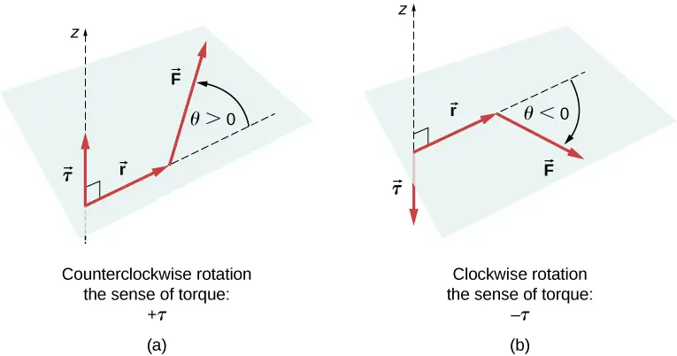
Media
View this demonstration to see two forces act on a rigid square in two dimensions. At all times, the static equilibrium conditions given by Equation 12.7 through Equation 12.9 are satisfied. You can vary magnitudes of the forces and their lever arms and observe the effect these changes have on the square.
In many equilibrium situations, one of the forces acting on the body is its weight. In free-body diagrams, the weight vector is attached to the center of gravity of the body. For all practical purposes, the center of gravity is identical to the center of mass, as you learned in Linear Momentum and Collisions on linear momentum and collisions. Only in situations where a body has a large spatial extension so that the gravitational field is nonuniform throughout its volume, are the center of gravity and the center of mass located at different points. In practical situations, however, even objects as large as buildings or cruise ships are located in a uniform gravitational field on Earth’s surface, where the acceleration due to gravity has a constant magnitude of \(g=9.8\:\text{m/s}^{2}.\) In these situations, the center of gravity is identical to the center of mass. Therefore, throughout this chapter, we use the center of mass (CM) as the point where the weight vector is attached. Recall that the CM has a special physical meaning: When an external force is applied to a body at exactly its CM, the body as a whole undergoes translational motion and such a force does not cause rotation.
When the CM is located off the axis of rotation, a net gravitational torque occurs on an object. Gravitational torque is the torque caused by weight. This gravitational torque may rotate the object if there is no support present to balance it. The magnitude of the gravitational torque depends on how far away from the pivot the CM is located. For example, in the case of a tipping truck (Figure 12.3), the pivot is located on the line where the tires make contact with the road’s surface. If the CM is located high above the road’s surface, the gravitational torque may be large enough to turn the truck over. Passenger cars with a low-lying CM, close to the pavement, are more resistant to tipping over than are trucks.
![Figure A shows an evenly loaded truck with the center of gravity within the area of support. Figure B shows a truck with the center of gravity outside the area of support that is close to turning over. A car in equilibrium is shown next to it for the comparison. Figure C is the schematics that shows the position of the combined center of mass, a combination of load and truck centers of mass, between the two wheels that keep the vehicle stable. Figure D is the schematics that shows the position of the combined center of mass, a combination of load and truck centers of mass, outside the two wheels that make the vehicle unstable and can cause it to tip over.](img/cnx-uphysics-12-01-tipping.webp)
Media
If you tilt a box so that one edge remains in contact with the table beneath it, then one edge of the base of support becomes a pivot. As long as the center of gravity of the box remains over the base of support, gravitational torque rotates the box back toward its original position of stable equilibrium. When the center of gravity moves outside of the base of support, gravitational torque rotates the box in the opposite direction, and the box rolls over. View this demonstration to experiment with stable and unstable positions of a box.
Example 12.1 Center of Gravity of a Car
A passenger car with a 2.5-m wheelbase has 52% of its weight on the front wheels on level ground, as illustrated in Figure 12.4. Where is the CM of this car located with respect to the rear axle?
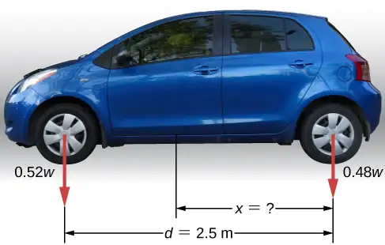
Strategy
We do not know the weight w of the car. All we know is that when the car rests on a level surface, 0.52w pushes down on the surface at contact points of the front wheels and 0.48w pushes down on the surface at contact points of the rear wheels. Also, the contact points are separated from each other by the distance \(d=2.5\:\text{m}.\) At these contact points, the car experiences normal reaction forces with magnitudes \(F_{\text{F}}=0.52w\) and \(F_{\text{R}}=0.48w\) on the front and rear axles, respectively. We also know that the car is an example of a rigid body in equilibrium whose entire weight w acts at its CM. The CM is located somewhere between the points where the normal reaction forces act, somewhere at a distance x from the point where \(F_{R}\) acts. Our task is to find x. Thus, we identify three forces acting on the body (the car), and we can draw a free-body diagram for the extended rigid body, as shown in Figure 12.5.
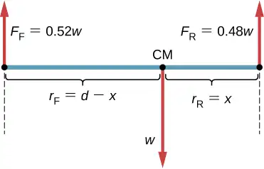
We are almost ready to write down equilibrium conditions Equation 12.7 through Equation 12.9 for the car, but first we must decide on the reference frame. Suppose we choose the x-axis along the length of the car, the y-axis vertical, and the z-axis perpendicular to this xy-plane. With this choice we only need to write Equation 12.7 and Equation 12.9 because all the y-components are identically zero. Now we need to decide on the location of the pivot point. We can choose any point as the location of the axis of rotation (z-axis). Suppose we place the axis of rotation at CM, as indicated in the free-body diagram for the car. At this point, we are ready to write the equilibrium conditions for the car.
Solution
Each equilibrium condition contains only three terms because there are \(N=3\) forces acting on the car. The first equilibrium condition, Equation 12.7, reads
This condition is trivially satisfied because when we substitute the data, Equation 12.11 becomes \(+0.52w-w+0.48w=0.\) The second equilibrium condition, Equation 12.9, reads
where \(\tau_{\text{F}}\) is the torque of force \(F_{\text{F}},\:\tau_{w}\) is the gravitational torque of force w, and \(\tau_{\text{R}}\) is the torque of force \(F_{\text{R}}.\) When the pivot is located at CM, the gravitational torque is identically zero because the lever arm of the weight with respect to an axis that passes through CM is zero. The lines of action of both normal reaction forces are perpendicular to their lever arms, so in Equation 12.10, we have \(|\:\sin\:\theta|=1\) for both forces. From the free-body diagram, we read that torque \(\tau_{\text{F}}\) causes clockwise rotation about the pivot at CM, so its sense is negative; and torque \(\tau_{\text{R}}\) causes counterclockwise rotation about the pivot at CM, so its sense is positive. With this information, we write the second equilibrium condition as
With the help of the free-body diagram, we identify the force magnitudes \(F_{\text{R}}=0.48w\) and \(F_{\text{F}}=0.52w,\) and their corresponding lever arms \(r_{\text{R}}=x\) and \(r_{\text{F}}=d-x.\) We can now write the second equilibrium condition, Equation 12.13, explicitly in terms of the unknown distance x:
Here the weight w cancels and we can solve the equation for the unknown position x of the CM. The answer is \(x=0.52d=0.52(2.5\:\text{m})=1.3\:\text{m}.\)
Solution
Choosing the pivot at the position of the front axle does not change the result. The free-body diagram for this pivot location is presented in Figure 12.6. For this choice of pivot point, the second equilibrium condition is
When we substitute the quantities indicated in the diagram, we obtain
The answer obtained by solving Equation 12.13 is, again, \(x=0.52d=1.3\:\text{m}.\)
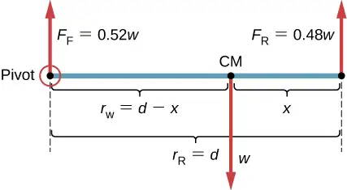
Significance
This example shows that when solving static equilibrium problems, we are free to choose the pivot location. For different choices of the pivot point we have different sets of equilibrium conditions to solve. However, all choices lead to the same solution to the problem.
Check Your Understanding
Solve Example 12.1 by choosing the pivot at the location of the rear axle.
Answer
\(x=1.3\:\text{m}\)
Check Your Understanding
Explain which one of the following situations satisfies both equilibrium conditions: (a) a tennis ball that does not spin as it travels in the air; (b) a pelican that is gliding in the air at a constant velocity at one altitude; or (c) a crankshaft in the engine of a parked car.
Answer
(b), (c)
A special case of static equilibrium occurs when all external forces on an object act at or along the axis of rotation or when the spatial extension of the object can be disregarded. In such a case, the object can be effectively treated like a point mass. In this special case, we need not worry about the second equilibrium condition, Equation 12.9, because all torques are identically zero and the first equilibrium condition (for forces) is the only condition to be satisfied. The free-body diagram and problem-solving strategy for this special case were outlined in Newton’s Laws of Motion and Applications of Newton’s Laws. You will see a typical equilibrium situation involving only the first equilibrium condition in the next example.
Media
View this demonstration to see three weights that are connected by strings over pulleys and tied together in a knot. You can experiment with the weights to see how they affect the equilibrium position of the knot and, at the same time, see the vector-diagram representation of the first equilibrium condition at work.
Example 12.2 A Breaking Tension
A small pan of mass 42.0 g is supported by two strings, as shown in Figure 12.7. The maximum tension that the string can support is 2.80 N. Mass is added gradually to the pan until one of the strings snaps. Which string is it? How much mass must be added for this to occur?
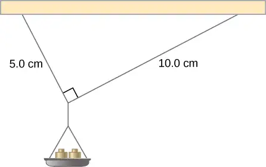
Strategy
This mechanical system consisting of strings, masses, and the pan is in static equilibrium. Specifically, the knot that ties the strings to the pan is in static equilibrium. The knot can be treated as a point; therefore, we need only the first equilibrium condition. The three forces pulling at the knot are the tension \({\mathbf{\vec{T}}}_{1}\) in the 5.0-cm string, the tension \({\mathbf{\vec{T}}}_{2}\) in the 10.0-cm string, and the weight \(\mathbf{\vec{w}}\) of the pan holding the masses. We adopt a rectangular coordinate system with the y-axis pointing opposite to the direction of gravity and draw the free-body diagram for the knot (see Figure 12.8). To find the tension components, we must identify the direction angles \(\alpha_{1}\) and \(\alpha_{2}\) that the strings make with the horizontal direction that is the x-axis. As you can see in Figure 12.7, the strings make two sides of a right triangle. We can use the Pythagorean theorem to solve this triangle, shown in Figure 12.8, and find the sine and cosine of the angles \(\alpha_{1}\) and \(\alpha_{2}.\) Then we can resolve the tensions into their rectangular components, substitute in the first condition for equilibrium (Equation 12.7 and Equation 12.8), and solve for the tensions in the strings. The string with a greater tension will break first.
![Top figure shows the distribution of forces for the knot that ties the strings to the pan. T1 and T2 forces are pulling at the knot upward. Weight, a sum of M and m multiplied by g is pulling the knot downward. Projections of T1 and T2 at the x and y axes are shown. Bottom figure shows the representation of the knot that ties the strings to the pan as a right triangle. It has legs of the length a and 2a with a being equal 5 centimeters. Hypotenuse is a square root of five. Angle alpha 1 is formed by shorter leg and hypotenuse. Angle alpha 2 is formed by the longer leg and hypotenuse. Cosine of angle alpha 1 is equal to sine of angle alpha 2 and is equal to one divided by square root of five. Cosine of angle alpha 2 is equal to sine of angle alpha 1 and is equal to two divided by square root of five.](img/cnx-uphysics-12-01-fbdpan.webp)
Solution
The weight w pulling on the knot is due to the mass M of the pan and mass m added to the pan, or \(w=(M+m)g.\) With the help of the free-body diagram in Figure 12.8, we can set up the equilibrium conditions for the knot:
From the free-body diagram, the magnitudes of components in these equations are
We substitute these components into the equilibrium conditions and simplify. We then obtain two equilibrium equations for the tensions:
The equilibrium equation for the x-direction tells us that the tension \(T_{1}\) in the 5.0-cm string is twice the tension \(T_{2}\) in the 10.0-cm string. Therefore, the shorter string will snap. When we use the first equation to eliminate \(T_{2}\) from the second equation, we obtain the relation between the mass \(m\) on the pan and the tension \(T_{1}\) in the shorter string:
The string breaks when the tension reaches the critical value of \(T_{1}=2.80\:\text{N}.\) The preceding equation can be solved for the critical mass m that breaks the string:
Significance
Suppose that the mechanical system considered in this example is attached to a ceiling inside an elevator going up. As long as the elevator moves up at a constant speed, the result stays the same because the weight \(w\) does not change. If the elevator moves up with acceleration, the critical mass is smaller because the weight of \(M+m\) becomes larger by an apparent weight due to the acceleration of the elevator. Still, in all cases the shorter string breaks first.
12.2 Examples of Static Equilibrium¶
Learning Objectives
By the end of this section, you will be able to:
- Identify and analyze static equilibrium situations
- Set up a free-body diagram for an extended object in static equilibrium
- Set up and solve static equilibrium conditions for objects in equilibrium in various physical situations
All examples in this chapter are planar problems. Accordingly, we use equilibrium conditions in the component form of Equation 12.7 to Equation 12.9. We introduced a problem-solving strategy in Example 12.1 to illustrate the physical meaning of the equilibrium conditions. Now we generalize this strategy in a list of steps to follow when solving static equilibrium problems for extended rigid bodies. We proceed in five practical steps.
Problem-Solving Strategy: Static Equilibrium
- Identify the object to be analyzed. For some systems in equilibrium, it may be necessary to consider more than one object. Identify all forces acting on the object. Identify the questions you need to answer. Identify the information given in the problem. In realistic problems, some key information may be implicit in the situation rather than provided explicitly.
- Set up a free-body diagram for the object. (a) Choose the xy-reference frame for the problem. Draw a free-body diagram for the object, including only the forces that act on it. When suitable, represent the forces in terms of their components in the chosen reference frame. As you do this for each force, cross out the original force so that you do not erroneously include the same force twice in equations. Label all forces—you will need this for correct computations of net forces in the x- and y-directions. For an unknown force, the direction must be assigned arbitrarily; think of it as a ‘working direction’ or ‘suspected direction.’ The correct direction is determined by the sign that you obtain in the final solution. A plus sign \((+)\) means that the working direction is the actual direction. A minus sign \((-)\) means that the actual direction is opposite to the assumed working direction. (b) Choose the location of the rotation axis; in other words, choose the pivot point with respect to which you will compute torques of acting forces. On the free-body diagram, indicate the location of the pivot and the lever arms of acting forces—you will need this for correct computations of torques. In the selection of the pivot, keep in mind that the pivot can be placed anywhere you wish, but the guiding principle is that the best choice will simplify as much as possible the calculation of the net torque along the rotation axis.
- Set up the equations of equilibrium for the object. (a) Use the free-body diagram to write a correct equilibrium condition Equation 12.7 for force components in the x-direction. (b) Use the free-body diagram to write a correct equilibrium condition Equation 12.11 for force components in the y-direction. (c) Use the free-body diagram to write a correct equilibrium condition Equation 12.9 for torques along the axis of rotation. Use Equation 12.10 to evaluate torque magnitudes and senses.
- Simplify and solve the system of equations for equilibrium to obtain unknown quantities. At this point, your work involves algebra only. Keep in mind that the number of equations must be the same as the number of unknowns. If the number of unknowns is larger than the number of equations, the problem cannot be solved.
- Evaluate the expressions for the unknown quantities that you obtained in your solution. Your final answers should have correct numerical values and correct physical units. If they do not, then use the previous steps to track back a mistake to its origin and correct it. Also, you may independently check for your numerical answers by shifting the pivot to a different location and solving the problem again, which is what we did in Example 12.1.
Note that setting up a free-body diagram for a rigid-body equilibrium problem is the most important component in the solution process. Without the correct setup and a correct diagram, you will not be able to write down correct conditions for equilibrium. Also note that a free-body diagram for an extended rigid body that may undergo rotational motion is different from a free-body diagram for a body that experiences only translational motion (as you saw in the chapters on Newton’s laws of motion). In translational dynamics, a body is represented as its CM, where all forces on the body are attached and no torques appear. This does not hold true in rotational dynamics, where an extended rigid body cannot be represented by one point alone. The reason for this is that in analyzing rotation, we must identify torques acting on the body, and torque depends both on the acting force and on its lever arm. Here, the free-body diagram for an extended rigid body helps us identify external torques.
Example 12.3 The Torque Balance
Three masses are attached to a uniform meter stick, as shown in Figure 12.9. The mass of the meter stick is 150.0 g and the masses to the left of the fulcrum are \(m_{1}=50.0\:\text{g}\) and \(m_{2}=75.0\:\text{g}.\) Find the mass \(m_{3}\) that balances the system when it is attached at the right end of the stick, and the normal reaction force at the fulcrum when the system is balanced.
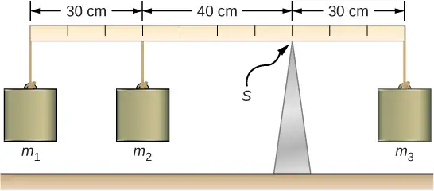
Strategy
For the arrangement shown in the figure, we identify the following five forces acting on the meter stick:
\(w_{1}=m_{1}g\) is the weight of mass \(m_{1};\) \(w_{2}=m_{2}g\) is the weight of mass \(m_{2};\)
\(w=mg\) is the weight of the entire meter stick; \(w_{3}=m_{3}g\) is the weight of unknown mass \(m_{3};\)
\(F_{S}\) is the normal reaction force at the support point S.
We choose a frame of reference where the direction of the y-axis is the direction of gravity, the direction of the x-axis is along the meter stick, and the axis of rotation (the z-axis) is perpendicular to the x-axis and passes through the support point S. In other words, we choose the pivot at the point where the meter stick touches the support. This is a natural choice for the pivot because this point does not move as the stick rotates. Now we are ready to set up the free-body diagram for the meter stick. We indicate the pivot and attach five vectors representing the five forces along the line representing the meter stick, locating the forces with respect to the pivot Figure 12.10. At this stage, we can identify the lever arms of the five forces given the information provided in the problem. For the three hanging masses, the problem is explicit about their locations along the stick, but the information about the location of the weight w is given implicitly. The key word here is “uniform.” We know from our previous studies that the CM of a uniform stick is located at its midpoint, so this is where we attach the weight w, at the 50-cm mark.
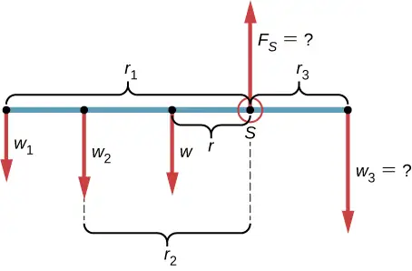
Solution
With Figure 12.9 and Figure 12.10 for reference, we begin by finding the lever arms of the five forces acting on the stick:
Now we can find the five torques with respect to the chosen pivot:
The second equilibrium condition (equation for the torques) for the meter stick is
When substituting torque values into this equation, we can omit the torques giving zero contributions. In this way the second equilibrium condition is
Selecting the \(+y\)-direction to be parallel to \({\vec{F}}_{S},\) the first equilibrium condition for the stick is
Substituting the forces, the first equilibrium condition becomes
We solve these equations simultaneously for the unknown values \(m_{3}\) and \(F_{S}.\) In Equation 12.17, we cancel the g factor and rearrange the terms to obtain
To obtain \(m_{3}\) we divide both sides by \(r_{3},\) so we have
To find the normal reaction force, we rearrange the terms in Equation 12.18, converting grams to kilograms:
Significance
Notice that Equation 12.17 is independent of the value of g. The torque balance may therefore be used to measure mass, since variations in g-values on Earth’s surface do not affect these measurements. This is not the case for a spring balance because it measures the force.
Check Your Understanding
Repeat Example 12.3 using the left end of the meter stick to calculate the torques; that is, by placing the pivot at the left end of the meter stick.
Answer
316.7 g; 5.8 N
In the next example, we show how to use the first equilibrium condition (equation for forces) in the vector form given by Equation 12.7 and Equation 12.8. We present this solution to illustrate the importance of a suitable choice of reference frame. Although all inertial reference frames are equivalent and numerical solutions obtained in one frame are the same as in any other, an unsuitable choice of reference frame can make the solution quite lengthy and convoluted, whereas a wise choice of reference frame makes the solution straightforward. We show this in the equivalent solution to the same problem. This particular example illustrates an application of static equilibrium to biomechanics.
Example 12.4 Forces in the Forearm
A weightlifter is holding a 50.0-lb weight (equivalent to 222.4 N) with his forearm, as shown in Figure 12.11. His forearm is positioned at \(\beta=60{}^{\circ}\) with respect to his upper arm. The forearm is supported by a contraction of the biceps muscle, which causes a torque around the elbow. Assuming that the tension in the biceps acts along the vertical direction given by gravity, what tension must the muscle exert to hold the forearm at the position shown? What is the force on the elbow joint? Assume that the forearm’s weight is negligible. Give your final answers in SI units.
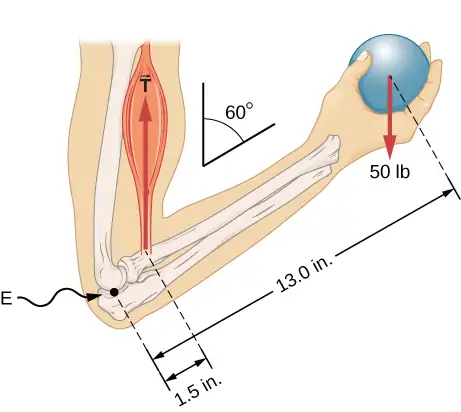
Strategy
We identify three forces acting on the forearm: the unknown force \(\mathbf{\vec{F}}\) at the elbow; the unknown tension \({\mathbf{\vec{T}}}_{\text{M}}\) in the muscle; and the weight \(\mathbf{\vec{w}}\) with magnitude \(w=50\:\text{lb}.\) We adopt the frame of reference with the x-axis along the forearm and the pivot at the elbow. The vertical direction is the direction of the weight, which is the same as the direction of the upper arm. The x-axis makes an angle \(\beta=60{}^{\circ}\) with the vertical. The y-axis is perpendicular to the x-axis. Now we set up the free-body diagram for the forearm. First, we draw the axes, the pivot, and the three vectors representing the three identified forces. Then we locate the angle \(\beta\) and represent each force by its x- and y-components, remembering to cross out the original force vector to avoid double counting. Finally, we label the forces and their lever arms. The free-body diagram for the forearm is shown in Figure 12.12. At this point, we are ready to set up equilibrium conditions for the forearm. Each force has x- and y-components; therefore, we have two equations for the first equilibrium condition, one equation for each component of the net force acting on the forearm.
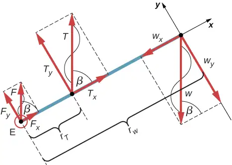
Notice that in our frame of reference, contributions to the second equilibrium condition (for torques) come only from the y-components of the forces because the x-components of the forces are all parallel to their lever arms, so that for any of them we have \(\sin\:\theta=0\) in Equation 12.10. For the y-components we have \(\theta=\pm 90{}^{\circ}\) in Equation 12.10. Also notice that the torque of the force at the elbow is zero because this force is attached at the pivot. So the contribution to the net torque comes only from the torques of \(T_{y}\) and of \(w_{y}.\)
Solution
We see from the free-body diagram that the x-component of the net force satisfies the equation
and the y-component of the net force satisfies
Equation 12.21 and Equation 12.22 are two equations of the first equilibrium condition (for forces). Next, we read from the free-body diagram that the net torque along the axis of rotation is
Equation 12.23 is the second equilibrium condition (for torques) for the forearm. The free-body diagram shows that the lever arms are \(r_{T}=1.5\:\text{in}.\) and \(r_{w}=13.0\:\text{in}.\) At this point, we do not need to convert inches into SI units, because as long as these units are consistent in Equation 12.23, they cancel out. Using the free-body diagram again, we find the magnitudes of the component forces:
We substitute these magnitudes into Equation 12.21, Equation 12.22, and Equation 12.23 to obtain, respectively,
When we simplify these equations, we see that we are left with only two independent equations for the two unknown force magnitudes, F and T, because Equation 12.21 for the x-component is equivalent to Equation 12.22 for the y-component. In this way, we obtain the first equilibrium condition for forces
and the second equilibrium condition for torques
The magnitude of tension in the muscle is obtained by solving Equation 12.25:
The force at the elbow is obtained by solving Equation 12.24:
The negative sign in the equation tells us that the actual force at the elbow is antiparallel to the working direction adopted for drawing the free-body diagram. In the final answer, we convert the forces into SI units of force. The answer is
Significance
Two important issues here are worth noting. The first concerns conversion into SI units, which can be done at the very end of the solution as long as we keep consistency in units. The second important issue concerns the hinge joints such as the elbow. In the initial analysis of a problem, hinge joints should always be assumed to exert a force in an arbitrary direction, and then you must solve for all components of a hinge force independently. In this example, the elbow force happens to be vertical because the problem assumes the tension by the biceps to be vertical as well. Such a simplification, however, is not a general rule.
Solution
Suppose we adopt a reference frame with the direction of the y-axis along the 50-lb weight and the pivot placed at the elbow. In this frame, all three forces have only y-components, so we have only one equation for the first equilibrium condition (for forces). We draw the free-body diagram for the forearm as shown in Figure 12.13, indicating the pivot, the acting forces and their lever arms with respect to the pivot, and the angles \(\theta_{T}\) and \(\theta_{w}\) that the forces \({\mathbf{\vec{T}}}_{\text{M}}\) and \(\mathbf{\vec{w}}\) (respectively) make with their lever arms. In the definition of torque given by Equation 12.10, the angle \(\theta_{T}\) is the direction angle of the vector \({\vec{T}}_{\text{M}},\) counted counterclockwise from the radial direction of the lever arm that always points away from the pivot. By the same convention, the angle \(\theta_{w}\) is measured counterclockwise from the radial direction of the lever arm to the vector \(\mathbf{\vec{w}}.\) Done this way, the non-zero torques are most easily computed by directly substituting into Equation 12.10 as follows:
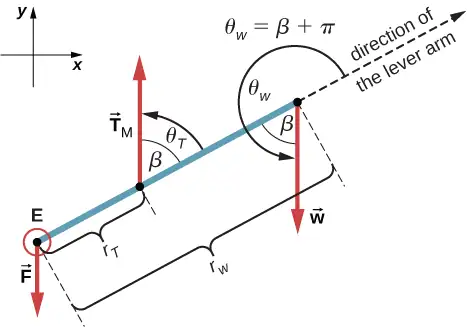
The second equilibrium condition, \(\tau_{T}+\tau_{w}=0,\) can be now written as
From the free-body diagram, the first equilibrium condition (for forces) is
Equation 12.26 is identical to Equation 12.25 and gives the result \(T=433.3\:\text{lb}.\) Equation 12.27 gives
We see that these answers are identical to our previous answers, but the second choice for the frame of reference leads to an equivalent solution that is simpler and quicker because it does not require that the forces be resolved into their rectangular components.
Check Your Understanding
Repeat Example 12.4 assuming that the forearm is an object of uniform density that weighs 8.896 N.
Answer
\(T=\text{1963 N};\:\text{F}=1732\:\text{N}\)
Example 12.5 A Ladder Resting Against a Wall
A uniform ladder is \(L=5.0\:\text{m}\) long and weighs 400.0 N. The ladder rests against a slippery vertical wall, as shown in Figure 12.14. The minimum inclination angle between the ladder and the rough floor below which the ladder slips is \(\beta=53{}^{\circ}.\) Find the reaction forces from the floor and from the wall on the ladder and the coefficient of static friction \(\mu_{\text{s}}\) at the interface of the ladder with the floor that prevents the ladder from slipping.
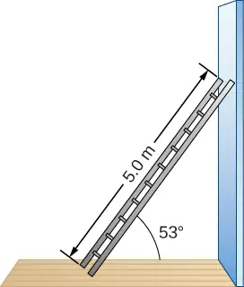
Strategy
We can identify four forces acting on the ladder. The first force is the normal reaction force N from the floor in the upward vertical direction. The second force is the static friction force \(f=\mu_{\text{s}}N\) directed horizontally along the floor toward the wall—this force prevents the ladder from slipping. These two forces act on the ladder at its contact point with the floor. The third force is the weight w of the ladder, attached at its CM located midway between its ends. The fourth force is the normal reaction force F from the wall in the horizontal direction away from the wall, attached at the contact point with the wall. There are no other forces because the wall is slippery, which means there is no friction between the wall and the ladder. Based on this analysis, we adopt the frame of reference with the y-axis in the vertical direction (parallel to the wall) and the x-axis in the horizontal direction (parallel to the floor). In this frame, each force has either a horizontal component or a vertical component but not both, which simplifies the solution. We select the pivot at the contact point with the floor. In the free-body diagram for the ladder, we indicate the pivot, all four forces and their lever arms, and the angles between lever arms and the forces, as shown in Figure 12.15. With our choice of the pivot location, there is no torque either from the normal reaction force N or from the static friction f because they both act at the pivot.
![Figure is a free-body diagram for a ladder that forms an angle beta with the floor and rests against a wall. Force N is applied at the point at the floor and is perpendicular to the floor. Force W is applied at the mid-point of the ladder. Force F is applied at the point resting at the wall and is perpendicular to the wall. Force W forms an angle theta w with the direction of the lever arm. Theta w is equal to the sum of Pi and half Pi with the beta subtracted. Force F forms an angle theta F with the direction of the lever arm. Theta F is equal to the Pi minus beta.](img/cnx-uphysics-12-02-fbdladder.webp)
Solution
From the free-body diagram, the net force in the x-direction is
the net force in the y-direction is
and the net torque along the rotation axis at the pivot point is
where \(\tau_{w}\) is the torque of the weight w and \(\tau_{F}\) is the torque of the reaction F. From the free-body diagram, we identify that the lever arm of the reaction at the wall is \(r_{F}=L=5.0\:\text{m}\) and the lever arm of the weight is \(r_{w}=L\,\text{/}\,2=2.5\:\text{m}.\) With the help of the free-body diagram, we identify the angles to be used in Equation 12.10 for torques: \(\theta_{F}=180{}^{\circ}-\beta\) for the torque from the reaction force with the wall, and \(\theta_{w}=180{}^{\circ}+(90{}^{\circ}-\beta)\) for the torque due to the weight. Now we are ready to use Equation 12.10 to compute torques:
We substitute the torques into Equation 12.30 and solve for \(F:\)
We obtain the normal reaction force with the floor by solving Equation 12.29: \(N=w=400.0\:\text{N}.\) The magnitude of friction is obtained by solving Equation 12.28: \(f=F=150.7\:\text{N}.\) Since the ladder will slip if the angle is any smaller, the static friction force is at its maximum angle and the coefficient of static friction is \(\mu_{\text{s}}=f\,\text{/}\,N=150.7\,\text{/}\,400.0=0.377.\)
The net force on the ladder at the contact point with the floor is the vector sum of the normal reaction from the floor and the static friction forces:
Its magnitude is
and its direction is
We should emphasize here two general observations of practical use. First, notice that when we choose a pivot point, there is no expectation that the system will actually pivot around the chosen point. The ladder in this example is not rotating at all but firmly stands on the floor; nonetheless, its contact point with the floor is a good choice for the pivot. Second, notice when we use Equation 12.10 for the computation of individual torques, we do not need to resolve the forces into their normal and parallel components with respect to the direction of the lever arm, and we do not need to consider a sense of the torque. As long as the angle in Equation 12.10 is correctly identified—with the help of a free-body diagram—as the angle measured counterclockwise from the direction of the lever arm to the direction of the force vector, Equation 12.10 gives both the magnitude and the sense of the torque. This is because torque is the vector product of the lever-arm vector crossed with the force vector, and Equation 12.10 expresses the rectangular component of this vector product along the axis of rotation.
Significance
This result is independent of the length of the ladder because L is cancelled in the second equilibrium condition, Equation 12.31. No matter how long or short the ladder is, as long as its weight is 400 N and the angle with the floor is \(53{}^{\circ},\) our results hold. But the ladder will slip if the net torque becomes negative in Equation 12.31. This happens for some angles when the coefficient of static friction is not great enough to prevent the ladder from slipping.
Check Your Understanding
For the situation described in Example 12.5, determine the values of the coefficient \(\mu_{\text{s}}\) of static friction for which the ladder starts slipping, given that \(\beta\) is the angle that the ladder makes with the floor.
Answer
\(\mu_{s} \lt 0.5\:\cot\:\beta\)
Example 12.6 Forces on Door Hinges
A swinging door that weighs \(w=400.0\:\text{N}\) is supported by hinges A and B so that the door can swing about a vertical axis passing through the hinges Figure 12.16. The door has a width of \(b=1.00\:\text{m},\) and the door slab has a uniform mass density. The hinges are placed symmetrically at the door’s edge in such a way that the door’s weight is evenly distributed between them. The hinges are separated by distance \(a=2.00\:\text{m}.\) Find the forces on the hinges when the door rests half-open.
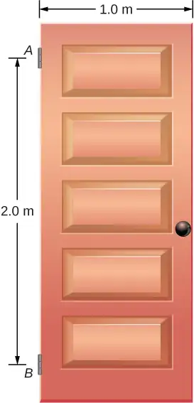
Strategy
The forces that the door exerts on its hinges can be found by simply reversing the directions of the forces that the hinges exert on the door. Hence, our task is to find the forces from the hinges on the door. Three forces act on the door slab: an unknown force \(\mathbf{\vec{A}}\) from hinge \(A,\) an unknown force \(\mathbf{\vec{B}}\) from hinge \(B,\) and the known weight \(\mathbf{\vec{w}}\) attached at the center of mass of the door slab. The CM is located at the geometrical center of the door because the slab has a uniform mass density. We adopt a rectangular frame of reference with the y-axis along the direction of gravity and the x-axis in the plane of the slab, as shown in panel (a) of Figure 12.17, and resolve all forces into their rectangular components. In this way, we have four unknown component forces: two components of force \(\mathbf{\vec{A}}\) \((A_{x}\) and \(A_{y}),\) and two components of force \(\mathbf{\vec{B}}\) \((B_{x}\) and \(B_{y}).\) In the free-body diagram, we represent the two forces at the hinges by their vector components, whose assumed orientations are arbitrary. Because there are four unknowns \((A_{x},\) \(B_{x},\) \(A_{y},\) and \(B_{y}),\) we must set up four independent equations. One equation is the equilibrium condition for forces in the x-direction. The second equation is the equilibrium condition for forces in the y-direction. The third equation is the equilibrium condition for torques in rotation about a hinge. Because the weight is evenly distributed between the hinges, we have the fourth equation, \(A_{y}=B_{y}.\) To set up the equilibrium conditions, we draw a free-body diagram and choose the pivot point at the upper hinge, as shown in panel (b) of Figure 12.17. Finally, we solve the equations for the unknown force components and find the forces.
![Figure A is a geometrical representation for a swinging vertical door supported by two hinges attached at points A and B. Forces A and B are applied at the points A and B. Projections of these forces to the x and y axes are shown. Force w is applied at the point CM. Point CM is lower than point A by half-a and to the right of point A by half-b. Line from point A to CM forms an angle beta with the edge of the wall. Figure B is a free-body diagram for a swinging vertical door is supported by two hinges attached at points A and B. Force Ay forms an angle beta with the line connecting points P and CM. Force By forms an angle beta with the line connecting points B and CM. Force W forms an angle beta with the line that is the continuation of the line connecting points P and CM. Distance between points P and CM is d.](img/cnx-uphysics-12-02-fbddoor.webp)
Solution
From the free-body diagram for the door we have the first equilibrium condition for forces:
We select the pivot at point P (upper hinge, per the free-body diagram) and write the second equilibrium condition for torques in rotation about point P:
We use the free-body diagram to find all the terms in this equation:
In evaluating \(\sin\:\beta,\) we use the geometry of the triangle shown in part (a) of the figure. Now we substitute these torques into Equation 12.32 and compute \(B_{x}:\)
Therefore the magnitudes of the horizontal component forces are \(A_{x}=B_{x}=100.0\:\text{N}.\) The forces on the door are
The forces on the hinges are found from Newton’s third law as
Significance
Note that if the problem were formulated without the assumption of the weight being equally distributed between the two hinges, we wouldn’t be able to solve it because the number of the unknowns would be greater than the number of equations expressing equilibrium conditions.
Check Your Understanding
Solve the problem in Example 12.6 by taking the pivot position at the center of mass.
Answer
\({\mathbf{\vec{F}}}_{\text{door on}\:A}=100.0\:\text{N}\mathbf{\hat{i}}-200.0\:\text{N}\mathbf{\hat{j}}\:\text{;}\:{\mathbf{\vec{F}}}_{\text{door on}\:B}=-100.0\:\text{N}\mathbf{\hat{i}}-200.0\:\text{N}\mathbf{\hat{j}}\)
Check Your Understanding
A 50-kg person stands 1.5 m away from one end of a uniform 6.0-m-long scaffold of mass 70.0 kg. Find the tensions in the two vertical ropes supporting the scaffold.
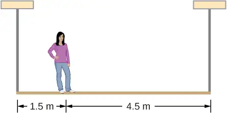
Answer
711.0 N; 466.0 N
Check Your Understanding
A 400.0-N sign hangs from the end of a uniform strut. The strut is 4.0 m long and weighs 600.0 N. The strut is supported by a hinge at the wall and by a cable whose other end is tied to the wall at a point 3.0 m above the left end of the strut. Find the tension in the supporting cable and the force of the hinge on the strut.
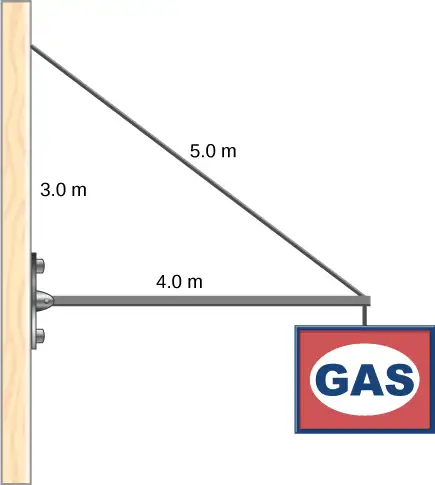
Answer
1167 N; 980 N directed upward at \(18{}^{\circ}\) above the horizontal
12.3 Stress, Strain, and Elastic Modulus¶
Learning Objectives
By the end of this section, you will be able to:
- Explain the concepts of stress and strain in describing elastic deformations of materials
- Describe the types of elastic deformation of objects and materials
A model of a rigid body is an idealized example of an object that does not deform under the actions of external forces. It is very useful when analyzing mechanical systems—and many physical objects are indeed rigid to a great extent. The extent to which an object can be perceived as rigid depends on the physical properties of the material from which it is made. For example, a ping-pong ball made of plastic is brittle, and a tennis ball made of rubber is elastic when acted upon by squashing forces. However, under other circumstances, both a ping-pong ball and a tennis ball may bounce well as rigid bodies. Similarly, someone who designs prosthetic limbs may be able to approximate the mechanics of human limbs by modeling them as rigid bodies; however, the actual combination of bones and tissues is an elastic medium.
For the remainder of this chapter, we move from consideration of forces that affect the motion of an object to those that affect an object’s shape. A change in shape due to the application of a force is known as a deformation. Even very small forces are known to cause some deformation. Deformation is experienced by objects or physical media under the action of external forces—for example, this may be squashing, squeezing, ripping, twisting, shearing, or pulling the objects apart. In the language of physics, two terms describe the forces on objects undergoing deformation: stress and strain.
Stress is a quantity that describes the magnitude of forces that cause deformation. Stress is generally defined as force per unit area. When forces pull on an object and cause its elongation, like the stretching of an elastic band, we call such stress a tensile stress. When forces cause a compression of an object, we call it a compressive stress. When an object is being squeezed from all sides, like a submarine in the depths of an ocean, we call this kind of stress a bulk stress (or volume stress). In other situations, the acting forces may be neither tensile nor compressive, and still produce a noticeable deformation. For example, suppose you hold a book tightly between the palms of your hands, then with one hand you press-and-pull on the front cover away from you, while with the other hand you press-and-pull on the back cover toward you. In such a case, when deforming forces act tangentially to the object’s surface, we call them ‘shear’ forces and the stress they cause is called shear stress.
The SI unit of stress is the pascal (Pa). When one newton of force presses on a unit surface area of one meter squared, the resulting stress is one pascal:
In the Imperial system of units, the unit of stress is ‘psi,’ which stands for ‘pound per square inch’ \((\text{lb/in}^{2}).\) Another unit that is often used for bulk stress is the atm (atmosphere). Conversion factors are
An object or medium under stress becomes deformed. The quantity that describes this deformation is called strain. Strain is given as a fractional change in either length (under tensile stress) or volume (under bulk stress) or geometry (under shear stress). Therefore, strain is a dimensionless number. Strain under a tensile stress is called tensile strain, strain under bulk stress is called bulk strain (or volume strain), and that caused by shear stress is called shear strain.
The greater the stress, the greater the strain; however, the relation between strain and stress does not need to be linear. Only when stress is sufficiently low is the deformation it causes in direct proportion to the stress value. The proportionality constant in this relation is called the elastic modulus. In the linear limit of low stress values, the general relation between stress and strain is
equation callout
As we can see from dimensional analysis of this relation, the elastic modulus has the same physical unit as stress because strain is dimensionless.
We can also see from Equation 12.33 that when an object is characterized by a large value of elastic modulus, the effect of stress is small. On the other hand, a small elastic modulus means that stress produces large strain and noticeable deformation. For example, a stress on a rubber band produces larger strain (deformation) than the same stress on a steel band of the same dimensions because the elastic modulus for rubber is two orders of magnitude smaller than the elastic modulus for steel.
The elastic modulus for tensile stress is called Young’s modulus; that for the bulk stress is called the bulk modulus; and that for shear stress is called the shear modulus. Note that the relation between stress and strain is an observed relation, measured in the laboratory. Elastic moduli for various materials are measured under various physical conditions, such as varying temperature, and collected in engineering data tables for reference (Table 12.1). These tables are valuable references for industry and for anyone involved in engineering or construction. In the next section, we discuss strain-stress relations beyond the linear limit represented by Equation 12.33, in the full range of stress values up to a fracture point. In the remainder of this section, we study the linear limit expressed by Equation 12.33.
Table 12.1 Approximate Elastic Moduli for Selected Materials
| Material | Young’s modulus \(\times\:{10}^{10}\text{Pa}\) |
Bulk modulus \(\times\:{10}^{10}\text{Pa}\) |
Shear modulus \(\times\:{10}^{10}\text{Pa}\) |
|---|---|---|---|
| Aluminum | 7.0 | 7.5 | 2.5 |
| Bone (tension) | 1.6 | 0.8 | 8.0 |
| Bone (compression) | 0.9 | ||
| Brass | 9.0 | 6.0 | 3.5 |
| Brick | 1.5 | ||
| Concrete | 2.0 | ||
| Copper | 11.0 | 14.0 | 4.4 |
| Crown glass | 6.0 | 5.0 | 2.5 |
| Granite | 4.5 | 4.5 | 2.0 |
| Hair (human) | 1.0 | ||
| Hardwood | 1.5 | 1.0 | |
| Iron | 21.0 | 16.0 | 7.7 |
| Lead | 1.6 | 4.1 | 0.6 |
| Marble | 6.0 | 7.0 | 2.0 |
| Nickel | 21.0 | 17.0 | 7.8 |
| Polystyrene | 3.0 | ||
| Silk | 6.0 | ||
| Spider thread | 3.0 | ||
| Steel | 20.0 | 16.0 | 7.5 |
| Acetone | 0.07 | ||
| Ethanol | 0.09 | ||
| Glycerin | 0.45 | ||
| Mercury | 2.5 | ||
| Water | 0.22 |
Tensile or Compressive Stress, Strain, and Young’s Modulus¶
Tension or compression occurs when two antiparallel forces of equal magnitude act on an object along only one of its dimensions, in such a way that the object does not move. One way to envision such a situation is illustrated in Figure 12.18. A rod segment is either stretched or squeezed by a pair of forces acting along its length and perpendicular to its cross-section. The net effect of such forces is that the rod changes its length from the original length \(L_{0}\) that it had before the forces appeared, to a new length L that it has under the action of the forces. This change in length \(\Delta L=L-L_{0}\) may be either elongation (when L is larger than the original length \(L_{0})\) or contraction (when L is smaller than the original length \(L_{0}).\) Tensile stress and strain occur when the forces are stretching an object, causing its elongation, and the length change \(\Delta L\) is positive. Compressive stress and strain occur when the forces are contracting an object, causing its shortening, and the length change \(\Delta L\) is negative.
In either of these situations, we define stress as the ratio of the deforming force \(F_{\perp}\) to the cross-sectional area A of the object being deformed. The symbol \(F_{\perp}\) that we reserve for the deforming force means that this force acts perpendicularly to the cross-section of the object. Forces that act parallel to the cross-section do not change the length of an object. The definition of the tensile stress is
Tensile strain is the measure of the deformation of an object under tensile stress and is defined as the fractional change of the object’s length when the object experiences tensile stress
Compressive stress and strain are defined by the same formulas, Equation 12.34 and Equation 12.35, respectively. The only difference from the tensile situation is that for compressive stress and strain, we take absolute values of the right-hand sides in Equation 12.34 and Equation 12.35.
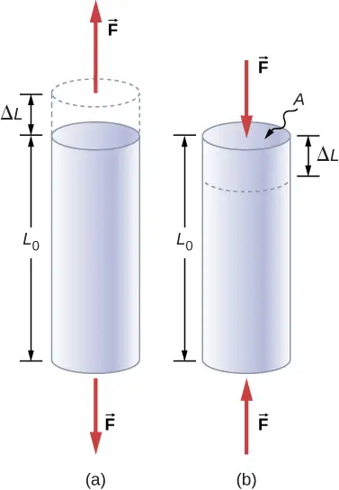
Young’s modulus Y is the elastic modulus when deformation is caused by either tensile or compressive stress, and is defined by Equation 12.33. Dividing this equation by tensile strain, we obtain the expression for Young’s modulus:
equation callout
Example 12.7 Compressive Stress in a Pillar
A sculpture weighing 10,000 N rests on a horizontal surface at the top of a 6.0-m-tall vertical pillar Figure 12.19. The pillar’s cross-sectional area is \(0\text{.20 m}^{2}\) and it is made of granite with a mass density of \({2700\:\text{kg/m}}^{3}.\) Find the compressive stress at the cross-section located 3.0 m below the top of the pillar and the value of the compressive strain of the top 3.0-m segment of the pillar.
Strategy
First we find the weight of the 3.0-m-long top section of the pillar. The normal force that acts on the cross-section located 3.0 m down from the top is the sum of the pillar’s weight and the sculpture’s weight. Once we have the normal force, we use Equation 12.34 to find the stress. To find the compressive strain, we find the value of Young’s modulus for granite in Table 12.1 and invert Equation 12.36.
Solution
The volume of the pillar segment with height \(h=3.0\:\text{m}\) and cross-sectional area \(A=0.20\:\text{m}^{2}\) is
With the density of granite \(\rho=2.7\:\times\:{10}^{3}\:\text{kg/m}^{3},\) the mass of the pillar segment is
The weight of the pillar segment is
The weight of the sculpture is \(w_{s}=1.0\:\times\:{10}^{4}\text{N},\) so the normal force on the cross-sectional surface located 3.0 m below the sculpture is
Therefore, the stress is
Young’s modulus for granite is \(Y=4.5\:\times\:{10}^{10}\text{Pa}=4.5\:\times\:{10}^{7}\text{kPa}.\) Therefore, the compressive strain at this position is
Significance
Notice that the normal force acting on the cross-sectional area of the pillar is not constant along its length, but varies from its smallest value at the top to its largest value at the bottom of the pillar. Thus, if the pillar has a uniform cross-sectional area along its length, the stress is largest at its base.
Check Your Understanding
Find the compressive stress and strain at the base of Nelson’s column.
Answer
\(206.8\:\text{kPa};\:4.6\:\times\:{10}^{-5}\)
Example 12.8 Stretching a Rod
A 2.0-m-long steel rod has a cross-sectional area of \(0.30\:\text{cm}^{2}.\) The rod is a part of a vertical support that holds a heavy 550-kg platform that hangs attached to the rod’s lower end. Ignoring the weight of the rod, what is the tensile stress in the rod and the elongation of the rod under the stress?
Strategy
First we compute the tensile stress in the rod under the weight of the platform in accordance with Equation 12.34. Then we invert Equation 12.36 to find the rod’s elongation, using \(L_{0}=2.0\:\text{m}.\) From Table 12.1, Young’s modulus for steel is \(Y=\:2.0\:\times\:{10}^{11}\text{Pa}.\)
Solution
Substituting numerical values into the equations gives us
Significance
Similarly as in the example with the column, the tensile stress in this example is not uniform along the length of the rod. Unlike in the previous example, however, if the weight of the rod is taken into consideration, the stress in the rod is largest at the top and smallest at the bottom of the rod where the equipment is attached.
Check Your Understanding
A 2.0-m-long wire stretches 1.0 mm when subjected to a load. What is the tensile strain in the wire?
Answer
\(5.0\:\times\:{10}^{-4}\)
Objects can often experience both compressive stress and tensile stress simultaneously Figure 12.20. One example is a long shelf loaded with heavy books that sags between the end supports under the weight of the books. The top surface of the shelf is in compressive stress and the bottom surface of the shelf is in tensile stress. Similarly, long and heavy beams sag under their own weight. In modern building construction, such bending strains can be almost eliminated with the use of I-beams Figure 12.21.
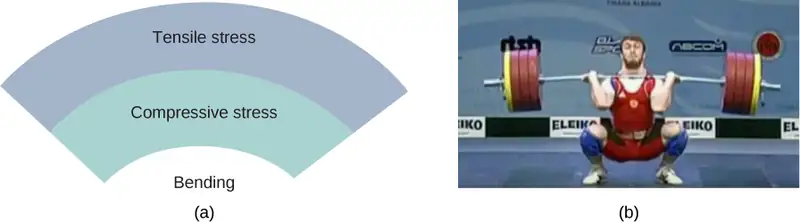
Media
A heavy box rests on a table supported by three columns. View this demonstration to move the box to see how the compression (or tension) in the columns is affected when the box changes its position.
Bulk Stress, Strain, and Modulus¶
When you dive into water, you feel a force pressing on every part of your body from all directions. What you are experiencing then is bulk stress, or in other words, pressure. Bulk stress always tends to decrease the volume enclosed by the surface of a submerged object. The forces of this “squeezing” are always perpendicular to the submerged surface Figure 12.22. The effect of these forces is to decrease the volume of the submerged object by an amount \(\Delta V\) compared with the volume \(V_{0}\) of the object in the absence of bulk stress. This kind of deformation is called bulk strain and is described by a change in volume relative to the original volume:
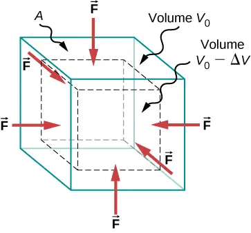
The bulk strain results from the bulk stress, which is a force \(F_{\perp}\) normal to a surface that presses on the unit surface area A of a submerged object. This kind of physical quantity, or pressure p, is defined as
We will study pressure in fluids in greater detail in Fluid Mechanics. An important characteristic of pressure is that it is a scalar quantity and does not have any particular direction; that is, pressure acts equally in all possible directions. When you submerge your hand in water, you sense the same amount of pressure acting on the top surface of your hand as on the bottom surface, or on the side surface, or on the surface of the skin between your fingers. What you are perceiving in this case is an increase in pressure \(\Delta p\) over what you are used to feeling when your hand is not submerged in water. What you feel when your hand is not submerged in the water is the normal pressure \(p_{0}\) of one atmosphere, which serves as a reference point. The bulk stress is this increase in pressure, or \(\Delta p,\) over the normal level, \(p_{0}.\)
When the bulk stress increases, the bulk strain increases in response, in accordance with Equation 12.33. The proportionality constant in this relation is called the bulk modulus, B, or
equation callout
The minus sign that appears in Equation 12.39 is for consistency, to ensure that B is a positive quantity. Note that the minus sign \((-)\) is necessary because an increase \(\Delta p\) in pressure (a positive quantity) always causes a decrease \(\Delta V\) in volume, and decrease in volume is a negative quantity. The reciprocal of the bulk modulus is called compressibility \(k,\) or
The term ‘compressibility’ is used in relation to fluids (gases and liquids). Compressibility describes the change in the volume of a fluid per unit increase in pressure. Fluids characterized by a large compressibility are relatively easy to compress. For example, the compressibility of water is \(4.64\:\times\:{10}^{-5}\text{/atm}\) and the compressibility of acetone is \(1.45\:\times\:{10}^{-4}\text{/atm}.\) This means that under a 1.0-atm increase in pressure, the relative decrease in volume is approximately three times as large for acetone as it is for water.
Example 12.9 Hydraulic Press
In a hydraulic press Figure 12.23, a 250-liter volume of oil is subjected to a 2300-psi pressure increase. If the compressibility of oil is \(2.0\:\times\:{10}^{-5}\,\text{/}\,\,\text{atm},\) find the bulk strain and the absolute decrease in the volume of oil when the press is operating.
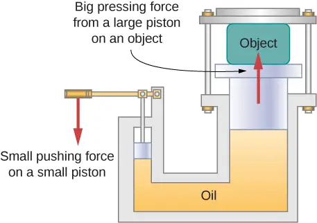
Strategy
We must invert Equation 12.40 to find the bulk strain. First, we convert the pressure increase from psi to atm, \(\Delta p=2300\:\text{psi}=2300\,\text{/}\,14.7\:\text{atm}\approx\:160\:\text{atm},\) and identify \(V_{0}=\:250\:\text{L}.\)
Solution
Substituting values into the equation, we have
Significance
Notice that since the compressibility of water is 2.32 times larger than that of oil, if the working substance in the hydraulic press of this problem were changed to water, the bulk strain as well as the volume change would be 2.32 times larger.
Check Your Understanding
If the normal force acting on each face of a cubical \(1\text{.0-m}^{3}\) piece of steel is changed by \(1.0\:\times\:{10}^{7}\text{N},\) find the resulting change in the volume of the piece of steel.
Answer
63 mL
Shear Stress, Strain, and Modulus¶
The concepts of shear stress and strain concern only solid objects or materials. Buildings and tectonic plates are examples of objects that may be subjected to shear stresses. In general, these concepts do not apply to fluids.
Shear deformation occurs when two antiparallel forces of equal magnitude are applied tangentially to opposite surfaces of a solid object, causing no deformation in the transverse direction to the line of force, as in the typical example of shear stress illustrated in Figure 12.24. Shear deformation is characterized by a gradual shift \(\Delta x\) of layers in the direction tangent to the acting forces. This gradation in \(\Delta x\) occurs in the transverse direction along some distance \(L_{0}.\) Shear strain is defined by the ratio of the largest displacement \(\Delta x\) to the transverse distance \(L_{0}\)
Shear strain is caused by shear stress. Shear stress is due to forces that act parallel to the surface. We use the symbol \(F_{\parallel}\) for such forces. The magnitude \(F_{\parallel}\) per surface area A where shearing force is applied is the measure of shear stress
The shear modulus is the proportionality constant in Equation 12.33 and is defined by the ratio of stress to strain. Shear modulus is commonly denoted by S:
equation callout
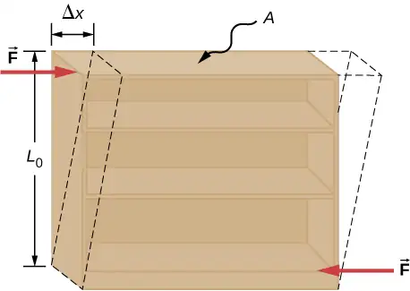
Example 12.10 An Old Bookshelf
A cleaning person tries to move a heavy, old bookcase on a carpeted floor by pushing tangentially on the surface of the very top shelf. However, the only noticeable effect of this effort is similar to that seen in Figure 12.24, and it disappears when the person stops pushing. The bookcase is 180.0 cm tall and 90.0 cm wide with four 30.0-cm-deep shelves, all partially loaded with books. The total weight of the bookcase and books is 600.0 N. If the person gives the top shelf a 50.0-N push that displaces the top shelf horizontally by 15.0 cm relative to the motionless bottom shelf, find the shear modulus of the bookcase.
Strategy
The only pieces of relevant information are the physical dimensions of the bookcase, the value of the tangential force, and the displacement this force causes. We identify \(F_{\parallel}=50.0\:\text{N},\:\Delta x=15.0\:\text{cm},\) \(L_{0}=180.0\:\text{cm},\) and \(A=\text{(30.0 cm)}\,\text{(90.0 cm)}=2700.0\:\text{cm}^{2},\) and we use Equation 12.43 to compute the shear modulus.
Solution
Substituting numbers into the equations, we obtain for the shear modulus
We can also find shear stress and strain, respectively:
Significance
If the person in this example gave the shelf a healthy push, it might happen that the induced shear would collapse it to a pile of rubbish. Much the same shear mechanism is responsible for failures of earth-filled dams and levees; and, in general, for landslides.
Check Your Understanding
Explain why the concepts of Young’s modulus and shear modulus do not apply to fluids.
Answer
Fluids have different mechanical properties than those of solids; fluids flow.
12.4 Elasticity and Plasticity¶
Learning Objectives
By the end of this section, you will be able to:
- Explain the limit where a deformation of material is elastic
- Describe the range where materials show plastic behavior
- Analyze elasticity and plasticity on a stress-strain diagram
We referred to the proportionality constant between stress and strain as the elastic modulus. But why do we call it that? What does it mean for an object to be elastic and how do we describe its behavior?
Elasticity is the tendency of solid objects and materials to return to their original shape after the external forces (load) causing a deformation are removed. An object is elastic when it comes back to its original size and shape when the load is no longer present. Physical reasons for elastic behavior vary among materials and depend on the microscopic structure of the material. For example, the elasticity of polymers and rubbers is caused by stretching polymer chains under an applied force. In contrast, the elasticity of metals is caused by resizing and reshaping the crystalline cells of the lattices (which are the material structures of metals) under the action of externally applied forces.
The two parameters that determine the elasticity of a material are its elastic modulus and its elastic limit. A high elastic modulus is typical for materials that are hard to deform; in other words, materials that require a high load to achieve a significant strain. An example is a steel band. A low elastic modulus is typical for materials that are easily deformed under a load; for example, a rubber band. If the stress under a load becomes too high, then when the load is removed, the material no longer comes back to its original shape and size, but relaxes to a different shape and size: The material becomes permanently deformed. The elastic limit is the stress value beyond which the material no longer behaves elastically but becomes permanently deformed.
Our perception of an elastic material depends on both its elastic limit and its elastic modulus. For example, all rubbers are characterized by a low elastic modulus and a high elastic limit; hence, it is easy to stretch them and the stretch is noticeably large. Among materials with identical elastic limits, the most elastic is the one with the lowest elastic modulus.
When the load increases from zero, the resulting stress is in direct proportion to strain in the way given by Equation 12.33, but only when stress does not exceed some limiting value. For stress values within this linear limit, we can describe elastic behavior in analogy with Hooke’s law for a spring. According to Hooke’s law, the stretch value of a spring under an applied force is directly proportional to the magnitude of the force. Conversely, the response force from the spring to an applied stretch is directly proportional to the stretch. In the same way, the deformation of a material under a load is directly proportional to the load, and, conversely, the resulting stress is directly proportional to strain. The linearity limit (or the proportionality limit) is the largest stress value beyond which stress is no longer proportional to strain. Beyond the linearity limit, the relation between stress and strain is no longer linear. When stress becomes larger than the linearity limit but still within the elasticity limit, behavior is still elastic, but the relation between stress and strain becomes nonlinear.
For stresses beyond the elastic limit, a material exhibits plastic behavior. This means the material deforms irreversibly and does not return to its original shape and size, even when the load is removed. When stress is gradually increased beyond the elastic limit, the material undergoes plastic deformation. Rubber-like materials show an increase in stress with the increasing strain, which means they become more difficult to stretch and, eventually, they reach a fracture point where they break. Ductile materials such as metals show a gradual decrease in stress with the increasing strain, which means they become easier to deform as stress-strain values approach the breaking point. Microscopic mechanisms responsible for plasticity of materials are different for different materials.
We can graph the relationship between stress and strain on a stress-strain diagram. Each material has its own characteristic strain-stress curve. A typical stress-strain diagram for a ductile metal under a load is shown in Figure 12.25. In this figure, strain is a fractional elongation (not drawn to scale). When the load is gradually increased, the linear behavior (red line) that starts at the no-load point (the origin) ends at the linearity limit at point H. For further load increases beyond point H, the stress-strain relation is nonlinear but still elastic. In the figure, this nonlinear region is seen between points H and E. Ever larger loads take the stress to the elasticity limit E, where elastic behavior ends and plastic deformation begins. Beyond the elasticity limit, when the load is removed, for example at P, the material relaxes to a new shape and size along the green line. This is to say that the material becomes permanently deformed and does not come back to its initial shape and size when stress becomes zero.
The material undergoes plastic deformation for loads large enough to cause stress to go beyond the elasticity limit at E. The material continues to be plastically deformed until the stress reaches the fracture point (breaking point). Beyond the fracture point, we no longer have one sample of material, so the diagram ends at the fracture point. For the completeness of this qualitative description, it should be said that the linear, elastic, and plasticity limits denote a range of values rather than one sharp point.
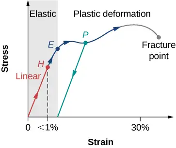
The value of stress at the fracture point is called breaking stress (or ultimate stress). Materials with similar elastic properties, such as two metals, may have very different breaking stresses. For example, ultimate stress for aluminum is \(2.2\:\times\:{10}^{8}\text{Pa}\) and for steel it may be as high as \(20.0\:\times\:{10}^{8}\text{Pa},\) depending on the kind of steel. We can make a quick estimate, based on Equation 12.34, that for rods with a \({1\text{-in}}^{2}\) cross-sectional area, the breaking load for an aluminum rod is \(3.2\:\times\:{10}^{4}\:\text{lb},\) and the breaking load for a steel rod is about nine times larger.
Chapter Review¶
Key Terms¶
- breaking stress (ultimate stress)
- value of stress at the fracture point
- bulk modulus
- elastic modulus for the bulk stress
- bulk strain
- (or volume strain) strain under the bulk stress, given as fractional change in volume
- bulk stress
- (or volume stress) stress caused by compressive forces, in all directions
- center of gravity
- point where the weight vector is attached
- compressibility
- reciprocal of the bulk modulus
- compressive strain
- strain that occurs when forces are contracting an object, causing its shortening
- compressive stress
- stress caused by compressive forces, only in one direction
- elastic
- object that comes back to its original size and shape when the load is no longer present
- elastic limit
- stress value beyond which material no longer behaves elastically and becomes permanently deformed
- elastic modulus
- proportionality constant in linear relation between stress and strain, in SI pascals
- equilibrium
- body is in equilibrium when its linear and angular accelerations are both zero relative to an inertial frame of reference
- first equilibrium condition
- expresses translational equilibrium; all external forces acting on the body balance out and their vector sum is zero
- gravitational torque
- torque on the body caused by its weight; it occurs when the center of gravity of the body is not located on the axis of rotation
- linearity limit (proportionality limit)
- largest stress value beyond which stress is no longer proportional to strain
- normal pressure
- pressure of one atmosphere, serves as a reference level for pressure
- pascal (Pa)
- SI unit of stress, SI unit of pressure
- plastic behavior
- material deforms irreversibly, does not go back to its original shape and size when load is removed and stress vanishes
- pressure
- force pressing in normal direction on a surface per the surface area, the bulk stress in fluids
- second equilibrium condition
- expresses rotational equilibrium; all torques due to external forces acting on the body balance out and their vector sum is zero
- shear modulus
- elastic modulus for shear stress
- shear strain
- strain caused by shear stress
- shear stress
- stress caused by shearing forces
- static equilibrium
- body is in static equilibrium when it is at rest in our selected inertial frame of reference
- strain
- dimensionless quantity that gives the amount of deformation of an object or medium under stress
- stress
- quantity that contains information about the magnitude of force causing deformation, defined as force per unit area
- stress-strain diagram
- graph showing the relationship between stress and strain, characteristic of a material
- tensile strain
- strain under tensile stress, given as fractional change in length, which occurs when forces are stretching an object, causing its elongation
- tensile stress
- stress caused by tensile forces, only in one direction, which occurs when forces are stretching an object, causing its elongation
- Young’s modulus
- elastic modulus for tensile or compressive stress
Key Equations¶
| First Equilibrium Condition | \(\displaystyle \sum_{k}{\mathbf{\vec{F}}}_{k}=\mathbf{\overrightarrow{0}}\) |
| Second Equilibrium Condition | \(\displaystyle \sum_{k}{\vec{\tau}}_{k}\:=\mathbf{\overrightarrow{0}}\) |
| Linear relation between stress and strain |
\(\text{stress}=\text{(elastic modulus)}\:\times\:\text{strain}\) |
| Young’s modulus | \(Y=\frac{\text{tensile stress}}{\text{tensile strain}}=\frac{F_{\perp}}{A}\:\frac{L_{0}}{\Delta L}\) |
| Bulk modulus | \(B=\frac{\text{bulk stress}}{\text{bulk strain}}=-\Delta p\frac{V_{0}}{\Delta V}\) |
| Shear modulus | \(S=\frac{\text{shear stress}}{\text{shear strain}}=\frac{F_{\parallel}}{A}\:\frac{L_{0}}{\Delta x}\) |
Summary¶
12.1 Conditions for Static Equilibrium¶
- A body is in equilibrium when it remains either in uniform motion (both translational and rotational) or at rest. When a body in a selected inertial frame of reference neither rotates nor moves in translational motion, we say the body is in static equilibrium in this frame of reference.
- Conditions for equilibrium require that the sum of all external forces acting on the body is zero (first condition of equilibrium), and the sum of all external torques from external forces is zero (second condition of equilibrium). These two conditions must be simultaneously satisfied in equilibrium. If one of them is not satisfied, the body is not in equilibrium.
- The free-body diagram for a body is a useful tool that allows us to count correctly all contributions from all external forces and torques acting on the body. Free-body diagrams for the equilibrium of an extended rigid body must indicate a pivot point and lever arms of acting forces with respect to the pivot.
12.2 Examples of Static Equilibrium¶
- A variety of engineering problems can be solved by applying equilibrium conditions for rigid bodies.
- In applications, identify all forces that act on a rigid body and note their lever arms in rotation about a chosen rotation axis. Construct a free-body diagram for the body. Net external forces and torques can be clearly identified from a correctly constructed free-body diagram. In this way, you can set up the first equilibrium condition for forces and the second equilibrium condition for torques.
- In setting up equilibrium conditions, we are free to adopt any inertial frame of reference and any position of the pivot point. All choices lead to one answer. However, some choices can make the process of finding the solution unduly complicated. We reach the same answer no matter what choices we make. The only way to master this skill is to practice.
12.3 Stress, Strain, and Elastic Modulus¶
- External forces on an object (or medium) cause its deformation, which is a change in its size and shape. The strength of the forces that cause deformation is expressed by stress, which in SI units is measured in the unit of pressure (pascal). The extent of deformation under stress is expressed by strain, which is dimensionless.
- For a small stress, the relation between stress and strain is linear. The elastic modulus is the proportionality constant in this linear relation.
- Tensile (or compressive) strain is the response of an object or medium to tensile (or compressive) stress. Here, the elastic modulus is called Young’s modulus. Tensile (or compressive) stress causes elongation (or shortening) of the object or medium and is due to an external forces acting along only one direction perpendicular to the cross-section.
- Bulk strain is the response of an object or medium to bulk stress. Here, the elastic modulus is called the bulk modulus. Bulk stress causes a change in the volume of the object or medium and is caused by forces acting on the body from all directions, perpendicular to its surface. Compressibility of an object or medium is the reciprocal of its bulk modulus.
- Shear strain is the deformation of an object or medium under shear stress. The shear modulus is the elastic modulus in this case. Shear stress is caused by forces acting along the object’s two parallel surfaces.
12.4 Elasticity and Plasticity¶
- An object or material is elastic if it comes back to its original shape and size when the stress vanishes. In elastic deformations with stress values lower than the proportionality limit, stress is proportional to strain. When stress goes beyond the proportionality limit, the deformation is still elastic but nonlinear up to the elasticity limit.
- An object or material has plastic behavior when stress is larger than the elastic limit. In the plastic region, the object or material does not come back to its original size or shape when stress vanishes but acquires a permanent deformation. Plastic behavior ends at the breaking point.
Conceptual Questions¶
12.1 Conditions for Static Equilibrium¶
1. What can you say about the velocity of a moving body that is in dynamic equilibrium?
Answer
constant
2. Under what conditions can a rotating body be in equilibrium? Give an example.
3. What three factors affect the torque created by a force relative to a specific pivot point?
Answer
magnitude and direction of the force, and its lever arm
4. Mechanics sometimes put a length of pipe over the handle of a wrench when trying to remove a very tight bolt. How does this help?
For the next four problems, evaluate the statement as either true or false and explain your answer.
5. If there is only one external force (or torque) acting on an object, it cannot be in equilibrium.
Answer
True, as the sum of forces cannot be zero in this case unless the force itself is zero.
6. If an object is in equilibrium there must be an even number of forces acting on it.
7. If an odd number of forces act on an object, the object cannot be in equilibrium.
Answer
False, provided forces add to zero as vectors then equilibrium can be achieved.
8. A body moving in a circle with a constant speed is in rotational equilibrium.
9. What purpose is served by a long and flexible pole carried by wire-walkers?
Answer
It helps a wire-walker to maintain equilibrium.
12.2 Examples of Static Equilibrium¶
10. Is it possible to rest a ladder against a rough wall when the floor is frictionless?
11. Show how a spring scale and a simple fulcrum can be used to weigh an object whose weight is larger than the maximum reading on the scale.
Answer
(Proof)
12. A painter climbs a ladder. Is the ladder more likely to slip when the painter is near the bottom or near the top?
12.3 Stress, Strain, and Elastic Modulus¶
Note: Unless stated otherwise, the weights of the wires, rods, and other elements are assumed to be negligible. Elastic moduli of selected materials are given in Table 12.1.
13. Why can a squirrel jump from a tree branch to the ground and run away undamaged, while a human could break a bone in such a fall?
Answer
In contact with the ground, stress in squirrel’s limbs is smaller than stress in human’s limbs.
14. When a glass bottle full of vinegar warms up, both the vinegar and the glass expand, but the vinegar expands significantly more with temperature than does the glass. The bottle will break if it is filled up to its very tight cap. Explain why and how a pocket of air above the vinegar prevents the bottle from breaking.
15. A thin wire strung between two nails in the wall is used to support a large picture. Is the wire likely to snap if it is strung tightly or if it is strung so that it sags considerably?
Answer
tightly
16. Review the relationship between stress and strain. Can you find any similarities between the two quantities?
17. What type of stress are you applying when you press on the ends of a wooden rod? When you pull on its ends?
Answer
compressive; tensile
18. Can compressive stress be applied to a rubber band?
19. Can Young’s modulus have a negative value? What about the bulk modulus?
Answer
no
20. If a hypothetical material has a negative bulk modulus, what happens when you squeeze a piece of it?
21. Discuss how you might measure the bulk modulus of a liquid.
12.4 Elasticity and Plasticity¶
Note: Unless stated otherwise, the weights of the wires, rods, and other elements are assumed to be negligible. Elastic moduli of selected materials are given in Table 12.1.
22. What is meant when a fishing line is designated as “a 10-lb test?”
23. Steel rods are commonly placed in concrete before it sets. What is the purpose of these rods?
Answer
It acts as “reinforcement,” increasing a range of strain values before the structure reaches its breaking point.
Problems¶
12.1 Conditions for Static Equilibrium¶
24. When tightening a bolt, you push perpendicularly on a wrench with a force of 165 N at a distance of 0.140 m from the center of the bolt. How much torque are you exerting relative to the center of the bolt?
25. When opening a door, you push on it perpendicularly with a force of 55.0 N at a distance of 0.850 m from the hinges. What torque are you exerting relative to the hinges?
Answer
\(46.8\:\text{N}\cdot\text{m}\)
26. Find the magnitude of the tension in each supporting cable shown below. In each case, the weight of the suspended body is 100.0 N and the masses of the cables are negligible.
![Figure A shows small pan of mass supported by string T3 that is tied to strings T1 and T2. Strings T1 and T2 are connected to two beams intersecting at a 90 degree angle. String T1 is perpendicular to the beam it is connected to. String T2 forms a 45 degree angle with the beam it is connected to. Figure B shows small pan of mass supported by string T2 that is tied to two identical strings T1. Strings T1 form 60 degree angles with the beam they are connected to. Figure C shows small pan of mass supported by string T3 that is tied to strings T1 and T2. String T1 and T2 form 60 and 45 degree angles, respectively, with the beam they are connected to. Figure D shows small pan of mass supported by string T4 that is tied to two strings T3 forming 6o degrees angle with the string T2. String T2 is connected to the beam by two strings T1. Strings T1 form 45 degree angles with the beam.](img/cnx-uphysics-12-01-sm11-18-img.webp)
27. What force must be applied at point P to keep the structure shown in equilibrium? The weight of the structure is negligible.
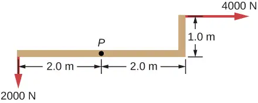
Answer
4,472 N, 153.4°
28. Is it possible to apply a force at P to keep in equilibrium the structure shown? The weight of the structure is negligible.
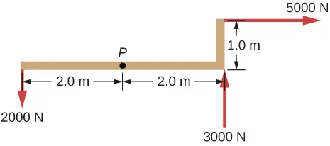
29. Two children push on opposite sides of a door during play. Both push horizontally and perpendicular to the door. One child pushes with a force of 17.5 N at a distance of 0.600 m from the hinges, and the second child pushes at a distance of 0.450 m. What force must the second child exert to keep the door from moving? Assume friction is negligible.
Answer
23.3 N
30. A small 1000-kg SUV has a wheel base of 3.0 m. If 60% if its weight rests on the front wheels, how far behind the front wheels is the wagon’s center of mass?
31. The uniform seesaw is balanced at its center of mass, as seen below. The smaller boy on the right has a mass of 40.0 kg. What is the mass of his friend?
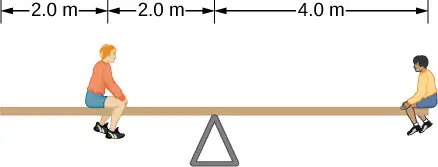
Answer
80.0 kg
12.2 Examples of Static Equilibrium¶
32. A uniform plank rests on a level surface as shown below. The plank has a mass of 30 kg and is 6.0 m long. How much mass can be placed at its right end before it tips? (Hint: When the board is about to tip over, it makes contact with the surface only along the edge that becomes a momentary axis of rotation.)
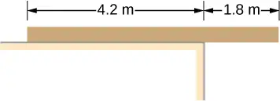
33. The uniform seesaw shown below is balanced on a fulcrum located 3.0 m from the left end. The smaller boy on the right has a mass of 40 kg and the bigger boy on the left has a mass 80 kg. What is the mass of the board?
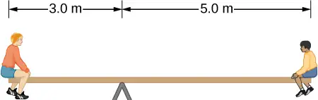
Answer
40 kg
34. In order to get his car out of the mud, a man ties one end of a rope to the front bumper and the other end to a tree 15 m away, as shown below. He then pulls on the center of the rope with a force of 400 N, which causes its center to be displaced 0.30 m, as shown. What is the force of the rope on the car?
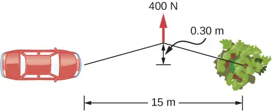
35. A uniform 40.0-kg scaffold of length 6.0 m is supported by two light cables, as shown below. An 80.0-kg painter stands 1.0 m from the left end of the scaffold, and his painting equipment is 1.5 m from the right end. If the tension in the left cable is twice that in the right cable, find the tensions in the cables and the mass of the equipment.
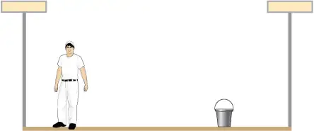
Answer
right cable, 444.3 N; left cable, 888.5 N; weight of equipment 156.8 N; 16.0 kg
36. When the structure shown below is supported at point P, it is in equilibrium. Find the magnitude of force F and the force applied at P. The weight of the structure is negligible.
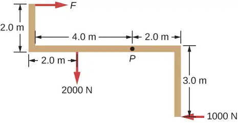
37. To get up on the roof, a person (mass 70.0 kg) places a 6.00-m aluminum ladder (mass 10.0 kg) against the house on a concrete pad with the base of the ladder 2.00 m from the house. The ladder rests against a plastic rain gutter, which we can assume to be frictionless. The center of mass of the ladder is 2.00 m from the bottom. The person is standing 3.00 m from the bottom. Find the normal reaction and friction forces on the ladder at its base.
Answer
784 N, 132.8 N
38. A uniform horizontal strut weighs 400.0 N. One end of the strut is attached to a hinged support at the wall, and the other end of the strut is attached to a sign that weighs 200.0 N. The strut is also supported by a cable attached between the end of the strut and the wall. Assuming that the entire weight of the sign is attached at the very end of the strut, find the tension in the cable and the force at the hinge of the strut.
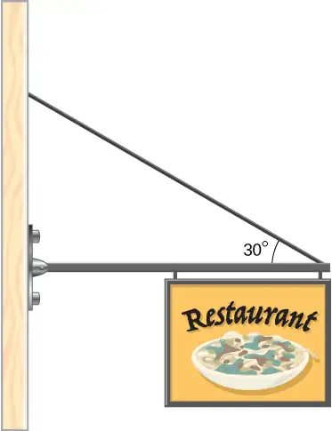
39. The forearm shown below is positioned at an angle \(\theta\) with respect to the upper arm, and a 5.0-kg mass is held in the hand. The total mass of the forearm and hand is 3.0 kg, and their center of mass is 15.0 cm from the elbow. (a) What is the magnitude of the force that the biceps muscle exerts on the forearm for \(\theta=60{}^{\circ}\text{?}\) (b) What is the magnitude of the force on the elbow joint for the same angle? (c) How do these forces depend on the angle \(\theta?\)
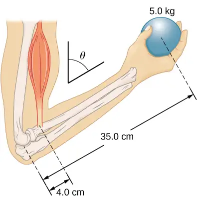
Answer
a. 539 N; b. 461 N; c. do not depend on the angle
40. The uniform boom shown below weighs 3000 N. It is supported by the horizontal guy wire and by the hinged support at point A. What are the forces on the boom due to the wire and due to the support at A? Does the force at A act along the boom?
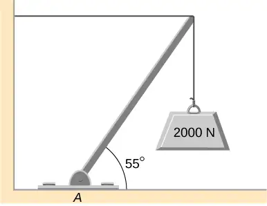
41. The uniform boom shown below weighs 700 N, and the object hanging from its right end weighs 400 N. The boom is supported by a light cable and by a hinge at the wall. Calculate the tension in the cable and the force on the hinge on the boom. Does the force on the hinge act along the boom?
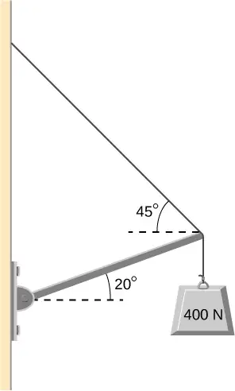
Answer
tension 778 N; at hinge 778 N at \(45{}^{\circ}\) above the horizontal; no
42. A 12.0-m boom, AB, of a crane lifting a 3000-kg load is shown below. The center of mass of the boom is at its geometric center, and the mass of the boom is 1000 kg. For the position shown, calculate tension T in the cable and the force at the axle A.
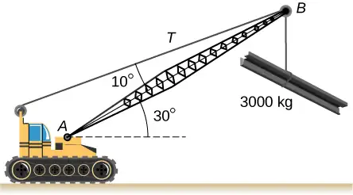
43. A uniform trapdoor shown below is 1.0 m by 1.5 m and weighs 300 N. It is supported by a single hinge (H), and by a light rope tied between the middle of the door and the floor. The door is held at the position shown, where its slab makes a \(30{}^{\circ}\) angle with the horizontal floor and the rope makes a \(20{}^{\circ}\) angle with the floor. Find the tension in the rope and the force at the hinge.
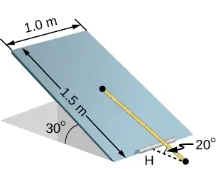
Answer
1500 N; 1620 N at \(30{}^{\circ}\)
44. A 90-kg man walks on a sawhorse, as shown below. The sawhorse is 2.0 m long and 1.0 m high, and its mass is 25.0 kg. Calculate the normal reaction force on each leg at the contact point with the floor when the man is 0.5 m from the far end of the sawhorse. (Hint: At each end, find the total reaction force first. This reaction force is the vector sum of two reaction forces, each acting along one leg. The normal reaction force at the contact point with the floor is the normal (with respect to the floor) component of this force.)
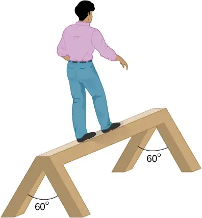
12.3 Stress, Strain, and Elastic Modulus¶
45. The “lead” in pencils is a graphite composition with a Young’s modulus of approximately \(1.0\:\times\:{10}^{9}\text{N}\,\text{/}\,\text{m}^{2}.\) Calculate the change in length of the lead in an automatic pencil if you tap it straight into the pencil with a force of 4.0 N. The lead is 0.50 mm in diameter and 60 mm long.
Answer
1.2 mm
46. TV broadcast antennas are the tallest artificial structures on Earth. In 1987, a 72.0-kg physicist placed himself and 400 kg of equipment at the top of a 610-m-high antenna to perform gravity experiments. By how much was the antenna compressed, if we consider it to be equivalent to a steel cylinder 0.150 m in radius?
47. By how much does a 65.0-kg mountain climber stretch her 0.800-cm diameter nylon rope when she hangs 35.0 m below a rock outcropping? (For nylon, \(Y=1.35\:\times\:{10}^{9}\text{Pa}\text{.)}\)
Answer
32.9 cm
48. When water freezes, its volume increases by 9.05%. What force per unit area is water capable of exerting on a container when it freezes?
49. A farmer making grape juice fills a glass bottle to the brim and caps it tightly. The juice expands more than the glass when it warms up, in such a way that the volume increases by 0.20%. Calculate the force exerted by the juice per square centimeter if its bulk modulus is \(1.8\:\times\:10^{9}\text{N}\,\text{/}\,\text{m}^{2},\) assuming the bottle does not break.
Answer
\(3.6\:\times\:{10}^{2}\:\text{N/cm}^{2}\)
50. A disk between vertebrae in the spine is subjected to a shearing force of 600.0 N. Find its shear deformation, using the shear modulus of \(1.0\:\times\:10^{9}\:\text{N/m}^{2}.\) The disk is equivalent to a solid cylinder 0.700 cm high and 4.00 cm in diameter.
51. A vertebra is subjected to a shearing force of 500.0 N. Find the shear deformation, taking the vertebra to be a cylinder 3.00 cm high and 4.00 cm in diameter.
Answer
\(11.9\:\text{μm}\)
52. Calculate the force a piano tuner applies to stretch a steel piano wire by 8.00 mm, if the wire is originally 1.35 m long and its diameter is 0.850 mm.
53. A 20.0-m-tall hollow aluminum flagpole is equivalent in strength to a solid cylinder 4.00 cm in diameter. A strong wind bends the pole as much as a horizontal 900.0-N force on the top would do. How far to the side does the top of the pole flex?
Answer
0.57 mm
54. A copper wire of diameter 1.0 cm stretches 1.0% when it is used to lift a load upward with an acceleration of \(2.0\:\text{m/s}^{2}.\) What is the weight of the load?
55. As an oil well is drilled, each new section of drill pipe supports its own weight and the weight of the pipe and the drill bit beneath it. Calculate the stretch in a new 6.00-m-long steel pipe that supports a 100-kg drill bit and a 3.00-km length of pipe with a linear mass density of 20.0 kg/m. Treat the pipe as a solid cylinder with a 5.00-cm diameter.
Answer
8.59 mm
56. A large uniform cylindrical steel rod of density \(\rho=7.8\:\text{g/cm}^{3}\) is 2.0 m long and has a diameter of 5.0 cm. The rod is fastened to a concrete floor with its long axis vertical. What is the normal stress in the rod at the cross-section located at (a) 1.0 m from its lower end? (b) 1.5 m from the lower end?
57. A 90-kg mountain climber hangs from a nylon rope and stretches it by 25.0 cm. If the rope was originally 30.0 m long and its diameter is 1.0 cm, what is Young’s modulus for the nylon?
Answer
\(1.35\:\times\:{10}^{9}\text{Pa}\)
58. A suspender rod of a suspension bridge is 25.0 m long. If the rod is made of steel, what must its diameter be so that it does not stretch more than 1.0 cm when a \(2.5\:\times\:{10}^{4}\text{-kg}\) truck passes by it? Assume that the rod supports all of the weight of the truck.
59. A copper wire is 1.0 m long and its diameter is 1.0 mm. If the wire hangs vertically, how much weight must be added to its free end in order to stretch it 3.0 mm?
Answer
259.0 N
60. A 100-N weight is attached to a free end of a metallic wire that hangs from the ceiling. When a second 100-N weight is added to the wire, it stretches 3.0 mm. The diameter and the length of the wire are 1.0 mm and 2.0 m, respectively. What is Young’s modulus of the metal used to manufacture the wire?
61. The bulk modulus of a material is \(1.0\:\times\:{10}^{11}\:\text{N/m}^{2}.\) What fractional change in volume does a piece of this material undergo when it is subjected to a bulk stress increase of \({10}^{7}\:\text{N/m}^{2}\text{?}\) Assume that the force is applied uniformly over the surface.
Answer
0.01%
62. Normal forces of magnitude \(1.0\:\times\:{10}^{6}\text{N}\) are applied uniformly to a spherical surface enclosing a volume of a liquid. This causes the radius of the surface to decrease from 50.000 cm to 49.995 cm. What is the bulk modulus of the liquid?
63. During a walk on a rope, a tightrope walker creates a tension of \(3.94\:\times\:10^{3}N\) in a wire that is stretched between two supporting poles that are 15.0 m apart. The wire has a diameter of 0.50 cm when it is not stretched. When the walker is on the wire in the middle between the poles the wire makes an angle of \(5.0{}^{\circ}\) below the horizontal. How much does this tension stretch the steel wire when the walker is this position?
Answer
1.44 cm
64. When using a pencil eraser, you exert a vertical force of 6.00 N at a distance of 2.00 cm from the hardwood-eraser joint. The pencil is 6.00 mm in diameter and is held at an angle of \(20.0{}^{\circ}\) to the horizontal. (a) By how much does the wood flex perpendicular to its length? (b) How much is it compressed lengthwise?
65. Normal forces are applied uniformly over the surface of a spherical volume of water whose radius is 20.0 cm. If the pressure on the surface is increased by 200 MPa, by how much does the radius of the sphere decrease?
Answer
0.63 cm
12.4 Elasticity and Plasticity¶
66. A uniform rope of cross-sectional area \({0.50\:\text{cm}}^{2}\) breaks when the tensile stress in it reaches \(6.00\:\times\:{10}^{6}\text{N/m}^{2}.\) (a) What is the maximum load that can be lifted slowly at a constant speed by the rope? (b) What is the maximum load that can be lifted by the rope with an acceleration of \({4.00\:\text{m/s}}^{2}\text{?}\)
67. One end of a vertical metallic wire of length 2.0 m and diameter 1.0 mm is attached to a ceiling, and the other end is attached to a 5.0-N weight pan, as shown below. The position of the pointer before the pan is 4.000 cm. Different weights are then added to the pan area, and the position of the pointer is recorded in the table shown. Plot stress versus strain for this wire, then use the resulting curve to determine Young’s modulus and the proportionality limit of the metal. What metal is this most likely to be?
| Added load (including pan) (N) |
Scale reading (cm) |
|---|---|
| 0 | 4.000 |
| 15 | 4.036 |
| 25 | 4.073 |
| 35 | 4.109 |
| 45 | 4.146 |
| 55 | 4.181 |
| 65 | 4.221 |
| 75 | 4.266 |
| 85 | 4.316 |
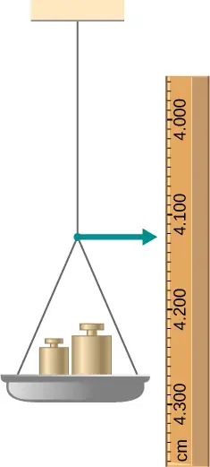
68. An aluminum \((\rho=2.7\:\text{g/cm}^{3})\) wire is suspended from the ceiling and hangs vertically. How long must the wire be before the stress at its upper end reaches the proportionality limit, which is \(8.0\:\times\:{10}^{7}\text{N/m}^{2}\text{?}\)
Additional Problems¶
69. The coefficient of static friction between the rubber eraser of the pencil and the tabletop is \(\mu_{s}=0.80.\) If the force \(\mathbf{\vec{F}}\) is applied along the axis of the pencil, as shown below, what is the minimum angle at which the pencil can stand without slipping? Ignore the weight of the pencil.
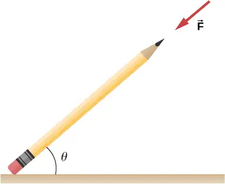
Answer
\(\tan^{-1}(1\text{/}\mu_{s})=51.3{}^{\circ}\)
70. A pencil rests against a corner, as shown below. The sharpened end of the pencil touches a smooth vertical surface and the eraser end touches a rough horizontal floor. The coefficient of static friction between the eraser and the floor is \(\mu_{s}=0.80.\) The center of mass of the pencil is located 9.0 cm from the tip of the eraser and 11.0 cm from the tip of the pencil lead. Find the minimum angle \(\theta\) for which the pencil does not slip.
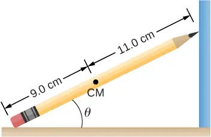
71. A uniform 4.0-m plank weighing 200.0 N rests against the corner of a wall, as shown below. There is no friction at the point where the plank meets the corner. (a) Find the forces that the corner and the floor exert on the plank. (b) What is the minimum coefficient of static friction between the floor and the plank to prevent the plank from slipping?
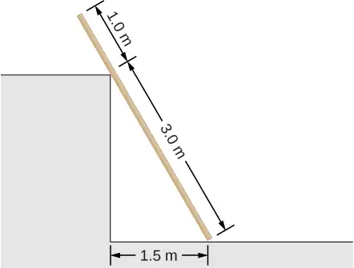
Answer
a. at corner 66.7 N at \(30{}^{\circ}\) with the horizontal; at floor 177 N at \(109{}^{\circ}\) with the horizontal; b. \(\mu_{\text{s}}=0.346\)
72. A 40-kg boy jumps from a height of 3.0 m, lands on one foot and comes to rest in 0.10 s after he hits the ground. Assume that he comes to rest with a constant acceleration opposite to the motion. If the total cross-sectional area of the bones in his legs just above his ankles is \(3.0\:\text{cm}^{2},\) what is the compression stress in these bones? Leg bones can be fractured when they are subjected to stress greater than \(1.7\:\times\:{10}^{8}\:\text{Pa}.\) Is the boy in danger of breaking his leg?
73. Two thin rods, one made of steel and the other of aluminum, are joined end to end. Each rod is 2.0 m long and has cross-sectional area \(9.1\:\text{mm}^{2}.\) If a 10,000-N tensile force is applied at each end of the combination, find: (a) stress in each rod; (b) strain in each rod; and, (c) elongation of each rod.
Answer
a. \(1.10\:\times\:{10}^{9}\text{N/m}^{2};\) b. \(5.5\:\times\:{10}^{-3};\) c. 11.0 mm, 31.4 mm
74. Two rods, one made of copper and the other of steel, have the same dimensions. If the copper rod stretches by 0.15 mm under some stress, how much does the steel rod stretch under the same stress?
Challenge Problems¶
75. A horizontal force \(\mathbf{\vec{F}}\) is applied to a uniform sphere in direction exact toward the center of the sphere, as shown below. Find the magnitude of this force so that the sphere remains in static equilibrium. What is the frictional force of the incline on the sphere?
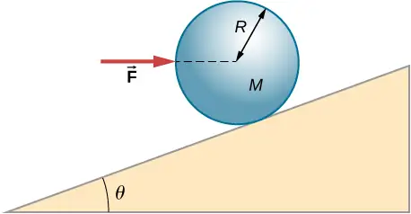
Answer
\(F=\textit{Mg}\:\tan\:\theta;f=0\)
76. When a motor is set on a pivoted mount seen below, its weight can be used to maintain tension in the drive belt. When the motor is not running the tensions \(T_{1}\) and \(T_{2}\) are equal. The total mass of the platform and the motor is 100.0 kg, and the diameter of the drive belt pulley is \(16.0\:\text{cm.}\) when the motor is off, find: (a) the tension in the belt, and (b) the force at the hinged platform support at point C. Assume that the center of mass of the motor plus platform is at the center of the motor.
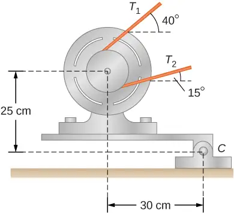
77. Two wheels A and B with weights w and 2w, respectively, are connected by a uniform rod with weight w/2, as shown below. The wheels are free to roll on the sloped surfaces. Determine the angle that the rod forms with the horizontal when the system is in equilibrium. Hint: There are five forces acting on the rod, which is two weights of the wheels, two normal reaction forces at points where the wheels make contacts with the wedge, and the weight of the rod.
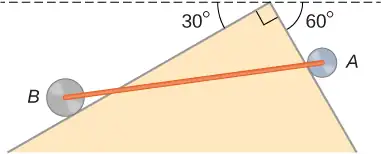
Answer
with the horizontal, \(\theta=42.2{}^{\circ};\) \(\alpha=17.8{}^{\circ}\) with the steeper side of the wedge
78. Weights are gradually added to a pan until a wheel of mass M and radius R is pulled over an obstacle of height d, as shown below. What is the minimum mass of the weights plus the pan needed to accomplish this?
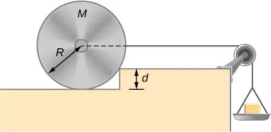
79. In order to lift a shovelful of dirt, a gardener pushes downward on the end of the shovel and pulls upward at distance \(l_{2}\) from the end, as shown below. The weight of the shovel is \(m\vec{g}\) and acts at the point of application of \({\vec{F}}_{2}.\) Calculate the magnitudes of the forces \({\vec{F}}_{1}\) and \({\vec{F}}_{2}\) as functions of \(l_{1},\) \(l_{2},\) mg, and the weight W of the load. Why do your answers not depend on the angle \(\theta\) that the shovel makes with the horizontal?
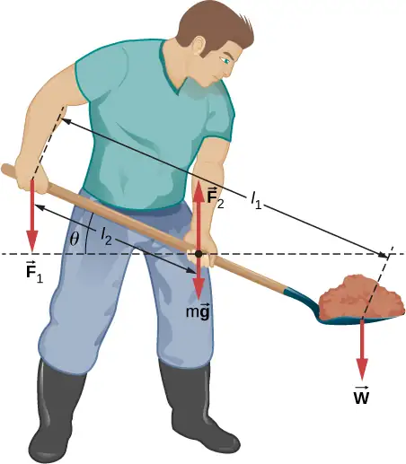
Answer
\(W(l_{1}\text{/}l_{2}-1);Wl_{1}\text{/}l_{2}+mg\)
80. A uniform rod of length 2R and mass M is attached to a small collar C and rests on a cylindrical surface of radius R, as shown below. If the collar can slide without friction along the vertical guide, find the angle \(\theta\) for which the rod is in static equilibrium.
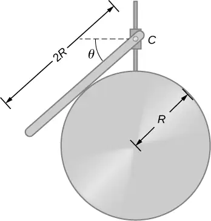
81. The pole shown below is at a \(90.0{}^{\circ}\) bend in a power line and is therefore subjected to more shear force than poles in straight parts of the line. The tension in each line is \(4.00\:\times\:10^{4}\text{N},\) at the angles shown. The pole is 15.0 m tall, has an 18.0 cm diameter, and can be considered to have half the strength of hardwood. (a) Calculate the compression of the pole. (b) Find how much it bends and in what direction. (c) Find the tension in a guy wire used to keep the pole straight if it is attached to the top of the pole at an angle of \(30.0{}^{\circ}\) with the vertical. The guy wire is in the opposite direction of the bend.
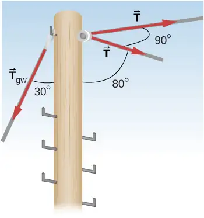
Answer
a. 1.1 mm; b. 6.6 mm to the right; c. \(1.11\:\times\:{10}^{5}\:\text{N}\)
Adapted from University Physics Volume 1 by OpenStax, licensed under CC BY 4.0. Access the original for free at openstax.org. Changes: converted to the web reading format of The Open Book Project.